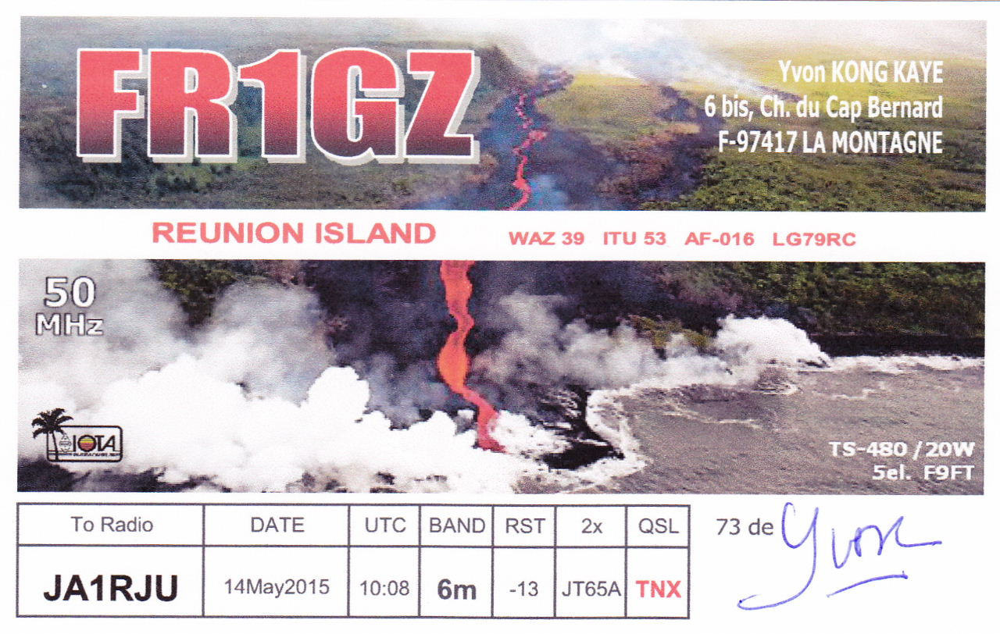
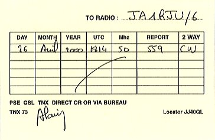

Flash ! DX


 
|
|
|
|

|
|
|
[Back Issues Jun.2020]
TIME:UTC(JST-09:00)
30.Jun.2020(15:00c)
---------------------------------------------------------------------------------
◎ 6m ES=> Es DX=>NA & ASA / EU's=> Open !!
-------------------------------------------------------------------------------
↓ (Mode FT8=>50.313MHz)
(22:00z=>23:59z)
N7XR.KL7SB.K7BA.KG7CW.W7EW.W7KNT.W7GJ.N7CMJ.KG7H.K6QXY
-------------------------------------------------------------------------------
↓ (Mode FT8=>50.313MHz)
(00:00z=03:30z> BA4TB.BG2WMA.RA0ASM.UA9YE.BA1SI.BA5HAM.BI4NLB.
↓
OH6DX 03:26.00 50.313.**** FT8 -19dB QSO with JA1's
XV1X 03:27.15 50.313.289 FT8 -10dB CQ (OK23)
↓
OH6CT 04:03.00 50.313.1949 FT8 -19dB QSO with JA1's
PA5Y 04:07.00 50.313.**** FT8 QSO with JA1's
UR4LRG 04:23.30 50.313.644 FT8 -15dB QSO with JA1's
OH3XA 04:33.30 50.313.455 FT8 -17dB QSO with JA1's
UR4LRG 04:44.30 50.313.644 FT8 -08dB/-10dB QSO
UA4CC 04:46.00 50.313.**** FT8 -15dB into JA1's
OH2BPU 04:52.30 50.313.**** FT8 -12dB QSO with JA1's
OG2M 04:58.30 50.313.2443 FT8 -08dB QSO with JA2/JA1'
OH3CT 05:05.00 50.313.**** FT8 -19dB QSO with JA1's
OH2ZZ 05:08.30 50.313.**** FT8 -19dB QSO with JA1's
OH3SR 05:11.30 50.313.**** FT8 -17dB QSO with JA1's
LA7QBF 05:12.30 50.313.**** FT8 -17dB into JA1
PA4VHF 05:16.30 50.313.**** FT8 -14dB into JA1
OH1MRE 05:20.30 50.313.**** FT8 -19dB QSO with JA1
OH7AZL 05:20.30 50.313.**** FT8 -22dB QSO with JA1's
OZ1DJJ 05:25.00 50.313.**** FT8 -14dB QSO with JA2
OH7KM 05:26.00 50.313.**** FT8 -04dB QSO with JA1's
SM7CAD 05:33.30 50.313.**** FT8 -12dB QSO with JA1's
OH1MLZ 05:37.00 50.313.875 FT8 -17dB QSO with JA1's
US0KW 05:57.00 50.313.2107 FT8 -19dB into JA1
UR0MC 05:58.30 50.313.2522 FT8 -08dB CQ (KN99)/QSO JA1's
UT7EJ 06:00.30 50.313.**** FT8 -17dB QSO with JA1's
OH8LXT 06:04.30 50.313.**** FT8 -14dB QSO with JA2
UT7QF 06:07.30 50.313.1733 FT8 -08dB CQ (KN77)/QSO JA1
LY2IJ 06:14.30 50.313.2679 FT8 -16dB CQ (KO25)/QSO JA1
LY2IJ 06:15.00 50.313.2679 FT8 -16dB QSO with JA1's/JA0
EI2FG 06:47.00 50.313.305 FT8 -05dB (IO61)=>Calling JA1
VK8AW 07:00.30 50.313.1165 FT8 -24dB CQ (PH57)/QSO JA1's/JA7
ES5PC 07:35.45 50.313.**** FT8 -14dB into JS6
LY2IJ 07:39.00 50.313.2684 FT8 -176dB QSO with JA5
↓
LY2IJ 07:57.30 50.313.2682 FT8 -16dB CQ (KO25)/QSO JA2
YL2CZ 08:03.00 50.313.**** FT8 -18dB QSO with JR6
XV1X 08:50.00 50.313.**** FT8 -12dB QSO with JA1's
YB5QZ 08:58.15 50.313.**** FT8 -17dB QSO with JA1's
9M2TO 09:12.00 50.313.**** FT8 QSO with JA1
↓
9W2EG.YB5QZ.XV1X.YB8HAI.BA8MM.DU3CQ.
↓
(10:00z=>)
↓
------------------------------------------------------------------------
(6/30> FT8:西日本(JA5)で入感した局=Time:UTC=>TNX JA5FFJ)
0610 OH1MLZ/-11 0621 LY2IJ/-14 0718 VK8AW/-18 0951 YB6HAI/-20
------------------------------------------------------------------------
TIME:UTC(JST-09:00)
29.Jun.2020(15:00c)
---------------------------------------------------------------------------------
◎ 6m ES=> Es DX=>NA & EU's=> Good Open !!
-------------------------------------------------------------------------------
↓ (Mode FT8=>50.313MHz)
(23:00z=> K5DL.N2PC.K0GU.KC0CW.AA5C.WD5K.W5JMW.W5ADD.AA5AM.K0BJ.N5BCA.K5TJ
N5ZM.W5EME.N5JR.KC5TGT.)
-------------------------------------------------------------------------------
↓ (Mode FT8=>50.313MHz)
(00:00z=> N5JR.AA5C.W5LUA.W5EME.AA5AM.W5ADD.N5OK.K9MK.N2NL.N5BCA.KD5UZA.
WD5K.K0GU.N5TJ.KB7IJ.K5GKC.W0SZ)
(01:00z=> W6QUV.N5OK.W5ADD.N5JR.AA5C.W5LUA.XX1X.BV7RR.BG4QOJ)
(02:00z=> XX1X.BV7RR.BG4QOJ.BG5BRG.VR2UNG.DU6GG.BH1HWF.BH6KWC.3W3B)
(03:00z=> 3W3B.DU6GG.BG2UKX.BG5BRG.DV3CEP.BA4TB.BH2RMF.BH6KWC.VR2UNG.BD6RN
K0GU.9V1XX.BI8CKV.BG6TWT.BI4SDT.YB1RUS.)
(04:00z=> 3W3B.BI8CKV.BH6KWC.BI8CKV.BD6RN.DV3CEP.4E1FNS.BH2RMF.BD6RN.
↓
(05:00z=> 9M2TO.XV1X.BD5BMV.VR2UNG.BI8CKV.BA4SI.BW2/JP1RIW.BH2RMF.BH4TVU
↓ BG8GAM.BA5HAM.BG6TWT.DU6GG.IZ7NLJ.IZ8FDH.BY5EA.BH2RMF/QRP)
(06:00z=> BA5HAM.BY5EA.BA4SI.DU6GG.F6BLP.OA2M.OZ7IS.BI8CKV.XV1X.I6WJB
↓ IK1FPV.IZ7NLJ.OZ1KEF.PA0RDY.LA4GHA.IZ8FTH.DL5ME.XV1X)
F6BLP 06:09.00 50.313.**** FT8 -19dB into JA1
E73S 06:24.30 50.313.**** FT8 -14dB into JA5
SM7CAD 06:24.30 50.313.**** FT8 QSO with JA5
↓
OZ1BNN.DJ6YX.VR2YAK.E73S.DL5ME.OZ7IS.SM7SPG.OZ1DJJ.UN7GK.4E1FNS.DM2TT
IZ0RVI.G3NSM.IC8TEM.G0TSM.OZ3K.IZ0RVI.VR2VLY.OZ1KEF.OZ1DSD.VR2UPU.PA0O
DF9CY.G0GGG.OZ1ADL.DM2TT.EA7HG.SM6CMJ.OZ8BZ.OZ5NJ.SM7VQG.OZ1FHU.VU2PTT
↓
(07:00z=> Z0RVI.XV1X.VU2PTT.VU2BGS.IK5ACO.OZ1DJJ.OZ3K.IZ0PVI.E73S.PE1L
DL8MKG.PE8GG.DF7AP.VU2CPL.M0NKR.9M2TO.PA0O.IZ5EME.VR2UPU
↓
(08:00z=>続)
↓
------------------------------------------------------------------------
(6/29> FT8:西日本(JA5)で入感した局=Time:UTC=>TNX JA5FFJ)
2302 K0GU/-18 2306 WD5K/-16 2314 W5ADD/-14 2357 N5JR/-21
0023 AA5C/-17 0429 YB1RUS 0514 I6WJB/-08 0623 SM7CAD/-20
0625 OZ1BNN/-17 0634 G0GGG/-17 0636 OZ1DSD/-18 0637 OZ8BZ/-13
0637 OZ3K/-11 0637 PA0O/-20 0638 IZ5EKV/-15 0639 SM6CMU/-15
0643 OZ5NJ/-14 0647 OZ1FHU/-17 0647 DF9CY/-15 0648 OZ7IS/-14
0648 SM7SPG/-18 0649 IZ5EME/-10 0649 OZ1KEF/-15 0650 PA3DOL/-20
0650 PE9GG/-17 0651 PA0RDY/-18 0652 OZ1ADL/-07 0654 OH2XO/-18
0659 SM6LPF/-09 0709 DG9BHU/-16 0711 OZ6FH/-19 0722 PE1L/-13
0732 DM2TT/-21 0751 OZ0JD/-16 0754 DK8NE/-15 0755 KL7HBK/-20
0810 G4RRA/-20 0812 G3TXF/-16 0853 VU2VPL/-19 0918 YB0AZ/-07
0938 VU2PTT/-19 1203 VU2OY/-18
------------------------------------------------------------------------
TIME:UTC(JST-09:00)
28.Jun.2020(15:00d)
---------------------------------------------------------------------------------
◎ 今日も早朝からEsが強力。近場のDXとともに21:00z過ぎから北米、カナダ西部(VE6/7)が
オープン。北米大陸は中部から南部かけての入感。21:48zにカリブ海のZF1EJ(Cayman.Is)
とのQSOが関東東部からリポートされている。
北米方面のコンデションはKL2R.KL7HBKが入感する中、近場の中国大陸方面やマレーシア
の9M2TO.9M4DXXなどのQSOで賑わっていた。昨日大量に入感したスリランカから06:00z頃
に4S7VGが入感し始めた。この時間、関東ではアラスカのKL7HBKが再び入感してきた。
期待されたヨーロッパ方面は06:27zのYT9A.06:33zのYU1KXから始まった。
KL7.4S7の入感が続いている頃からイタリアのI6WJBなどが入感してきた直後の07:10z頃か
らアフリカ・南ローデシアのZ81Dがオープンしてきた。コンデションのUP/Downが激しく
関東での入感時間も短く、Z81Dのコンデションは西日本に移ってしまった。
休日と言うこともあって、関東ではDXがQRVしている周波数付近での国内局のQRMで潰され
てしまった。
---------------------------------------------------------------------------------
◎ 6m ES=> Es DX=>NA/ZF & AF=>Z81 EU's=> Open !!
-------------------------------------------------------------------------------
↓ (Mode FT8=>50.313MHz)
(21:00z=> KB7ME.K0GU.WB8VLC.ZF1EJ(QM05).WB8VLC)
(22:00z=> VE7SNC.W5LDA.N0LWF.W5LE.WA5HOD)
(23:00z=> W5ADD.VE7ADY)
-------------------------------------------------------------------------------
(00:00z=> W4DXX.N4WW.KX4X.W7EW.KL2R.K0DAS.VE6WQ.VE6TA.KD5M.KL7HBK.AG4V)
(01:00z=> WS9V.KD5M.KL2R.KL7TC.6M0MM.BG2EFY.BY5EA.BG5BRG.BI6IVB.BH4TVU.
↓ XV1X.BA4TB.BI4SCC)
(02:00z=> BG4RG.BI6IVB.BH4TYL.BH4LGE.BA4SCP.BY5EA.BH8NSC.BA7CK.BH6KWC)
(04:00z=> BG8PB.BG2WRJ.BG4WOM.BG4QGJ.BG7TBP.VR2VAZ.BI4VNM.9M4DXX.VR2XRW)
(05:00z=> VR2XZK.BH4UTT.0M4DXX.9M2TO.BA1PK.4S7VG.VR2CO)
(06:00z=> 4S7VG.KL7HBK.VR2XRW.BI8DHZ.
↓
I6WJB 06:07.45 50.313.**** FT8 -14dB QSO with JA6
YT7DX 06:26.15 50.313.**** FT8 -18dB QSO with JA1
HG2DX 06:26.15 50.313.**** FT8 -11dB QSO with JA6
YT9A 06:27.30 50.313.**** FT8 -21dB into JA1
Z81D 06:58.30 50.313.**** FT8 -20dB into JA7(QM08)
↓
YU1FW.4S7RM.HA8CE.9A5M.YU1XX.HA8CE.KL7HBK.4S7VG.9M4DXX.BG7BOB.IZ5EME.
(07:00z=>SM0IJS.IK5PWQ.Z81D.
↓
Z81D 07:05.30 50.313.**** FT8 -10dB into JA1's
Z81D 07:18.00 50.313.**** FT8 -24dB into JA1(PM95)
Z81D 07:23.30 50.313.**** FT8 -19dB into JA6/JA4
↓
TIME:UTC(JST-09:00)
27.Jun.2020(15:00d)
---------------------------------------------------------------------------------
◎ 昨日は中国から東南アジアの近場のオープン後、午後から4S6NCH.4S7VG.4S7VG.4S7ABなど
スリランカの入感が夕方まで続き、ヨーロッパ方面の入感はほとんど無く静かな一日で終わ
ってしまった。
今日は前日のコンデションが嘘の様に早朝から北米(W/VE)、ハワイと並行してOH2MAなど
北欧が同時に入感する広範囲のオープンとなった。このコンデションは午後になってさらに
上昇、多数のヨーロッパが長時間の入感する大オープンが夕方まで続いた。
オープンはヨーロッパの南部から北欧までが同時に入感、週末とも相まって50.313MHzと
DX局とのQSO専用に設けられている50.323MHzの両周波数が一時は同時に満杯になるほどの
混雑となった。 残念ながらQRVが期待されたアフリカの入感は関東では無かったものの、
普段はあまりQSOのチャンスの無いT77.TK.HB0.JWなどを呼ぶ局も見られ、久しぶりに広範
囲の入感で賑わった。
【今日の入感局の詳細は後程】
---------------------------------------------------------------------------------
◎ 6m ES=> Es DX=>NA/KH6 & EU's=> Big Open !!
-------------------------------------------------------------------------------
↓
(20:00z=> K0GU.W4SO.W7EME.W5IP.K7AD.VE7ZD.N5NA.K0JGH.N5AQ.K4ADR)
(22:00z=> W4TAA.K2AK.SM2LKW.WA8QYJ.SM2OTU.W8HO.VE6DX.KT7E.WD5COV.N5BO.OH2MA
W7SO.KW2E)
(23:00z=> OH6CT.WE7EZ.K2AK.SM2LKW.KD7F.VE7CC.OH2MA.W7MEW.SM2UHF)
-------------------------------------------------------------------------------
(00:00z=> KH6U.W7MEM.AH6U.VE7PS.W7GJ.W7MEM.OH6MA.N6NR.WH6FXL.VE7PS.N7CMJ.K7GS
KH6CJJ.JT1BV.KH7R.
(01:00z=> KH6U.KH7R.JT1BV.WH6FXL.K7VDL.KH6HI.
↓
UN3G 01:28.00 50.313.**** FT8 -07dB QSO with JA0/JA7
↓
K0GU.JT1BV
↓
(02:18z=>K7BTW=> QSO with JA1's.)
(03:04z=>W7OUU=> QSO with JA0)
(03:06z=>KA6U=> QSO with JA0)
↓
YT9A 03:12.00 50.313.**** FT8 -07dB into JA6/JA5
SV1PMR 03:16.00 50.313.**** FT8 -17dB QSO with JA1-JA4
Z37CXY 03:23.30 50.313.**** FT8 -03dB QSO with JA5/JA4
UN7DAT 03:27.00 50.313.**** FT8 -17dB QSO with JA2
UN7CL 03:27.30 50.313.**** FT8 -14dB QSO with JA6
↓
SV1PMR.UN3G.YT9A.I6WJB.Z37CXY.UN7DAT.SM7CAD.IK7NXM.SV1AVD.UY3IC.US3LR.I6IQX
UA0ZC.UN9L.SV8KOU.SV1NJA.IZ7NLJ.SV1LK.
↓
(04:00z=>続)
↓
↓
------------------------------------------------------------------------
(6/25> FT8:西日本(JA5)で入感した局=Time:UTC=>TNX JA5FFJ)
2234 WD5COV/-15 2238 W7VS/-22 2238 N7NW/-19 2240 K7AD/-18
2245 N5WS/-20 2246 NA4RR/-17 2250 KT7E/-16 2250 K6UM/-22
2253 K7MAC/-16 2315 W7MEM/-12 2315 KG7CW/-18 2316 AH6U/-16
2317 N7BT/-19 2317 K7GS/-15 2321 K7KQA/-14 2322 KD7F/-18
2323 K0GU/-12 2334 VE7PS/-19 2341 W7EW/-14 0019 KH6U/-13
0319 Z37CXY/-08 0319 YT9A/-06 0321 SV1PMR/-13 0325 UM3M/-13
0327 SV1AVD/-18 0328 I6WJB/-12 0336 UN7DAT/-18 0336 SV8KOU/-18
0342 US3LR/-24 0345 IK7NXM/-14 0349 SV1NJA/-18 0350 UN9L/-11
0409 IK0FTA/-07 0410 SV1VS/-16 0437 IW0FFK/-17 0438 I0JX/-15
0439 UT2XQ/-12 0452 IZ5EME/-11 0456 9A7Y/-15 0458 9A3EME/-12
0458 UT4XU/-19 0459 IK8DYD/-16 0500 UT5UN/-17 0509 9A8A/-19
0509 IZ5EKV/-18 0510 S51DI/-19 0513 IZ4AIK/-15 0533 DF9CY/-17
0534 I4EAT/-09 0534 S57TW/-11 0534 S59A/-09 0534 9A2NA/-15
0535 IK4EWM/-07 0535 I4EWH/-10 0535 OM5XX/-16 0536 IZ3GNG/-17
0544 PA4T/-05 0544 PA0RDY/-13 0544 PA3EWP/-12 0545 9A7V/-19
0546 OE1WEU/-18 0546 PA0WRS/-14 0546 S58WW/-16 0547 PA2M/-13
0547 SP4MPB/-17 0548 IK4ISR/-16 0548 ES6RQ/-19 0549 ON7GB/-11
0549 PA7MM/-18 0549 PA3DOL/-16 0550 DD7DAC/-15 0550 F4EGA/-17
0551 F5BZB/-19 0552 PA3ECU/-17 0554 HB9FMN/-21 0554 PA5Y/-19
0555 DL1FDH/-21 0555 OM3EY/-21 0555 DF6PW/-17 0555 DO9REF/-22
0555 YL2GJX/-17 0557 F6EQZ/-18 0557 YL3KW/-18 0559 DL1OBF/-16
0600 DH6DAO/-21 0600 SM7MBH/-15 0602 PC7M/-09 0603 SP8AWL/-19
0604 E72U/-16 0606 S50A/-16 0606 EY8MM/-19 0607 DK5AI/-16
0607 DL8UI/-19 0607 DL8GP/-19 0608 DL3GD/-19 0608 DL2MIJ/-19
0610 SP2IQW/-15 0610 IK5PWQ/-18 0611 IZ1LBG/-19 0611 SP7CDG/-08
0611 OE3WHC/-18 0613 OZ1IEP/-06 0613 DL5WP/-24 0613 OE6IMD/-18
0613 IK2QPR/-23 0614 HB9RUZ/-17 0614 OZ0J/-13 0615 PA3FQA/-13
0615 IK6DTB/-09 0616 PA4VHF/-13 0616 F6GCP/-20 0617 SM6YNO/-18
0617 PA5JS/-18 0618 IW4AOT/-14 0619 HA1AD/-17 0620 DL8BDU/-18
0621 ON8SV/-20 0624 I5KG/-16 0625 SM7DTT/-16 0625 PA1AW/-14
0625 I8OHQ/-14 0625 DK3HV/-14 0625 OT4S/-20 0625 E73DPR/-18
0626 ON4IA/-19 0626 ON8DM/-20 0627 OZ1IKY/-15 0627 UY5ZZ/-21
0628 DF1KG/-09 0628 IK4PLW/-15 0628 PE1LWT/-17 0629 HA8TI/-20
0629 IK5GQK/-17 0629 OK2GM/-20 0630 IK4BHO/-12 0630 IZ6HAO/-16
0630 UT7KF/-18 0631 9A5X/-12 0631 F5PAC/-17 0632 IK5HHA/-22
0633 ES8GP/-15 0634 PG3N/-18 0634 SM7CAD/-18 0634 ES6DO/-19
0635 OH3SR/-08 0636 9A3TN/-12 0637 G4FUF/-11 0637 PE1HNT/-17
0638 DL8MKG/-17 0638 PI4CC/-18 0640 DK1WB/-12 0642 ES3NA/-19
0642 IK5CVV/-17 0643 9A6R/-16 0644 DL5XJ/-16 0645 G4FSG/-14
0646 G4ZFJ/-17 0647 IZ5IMD/-13 0648 OZ1BNN/-19 0648 IK3ZBM/-10
0648 SV8RX/-14 0648 US5WE/-18 0648 IK2TDM/-15 0648 OE5KE/-13
0648 G8HGN/-21 0650 IZ2LSP/-08 0651 OZ7UV/-22 0651 IV3DSH/-15
0651 IV3IHX/-21 0653 E77E/-16 0653 IK5KG/-12 653 OK1PI/-17
0654 EA3ZD/-16 0654 EA3A/-16 0655 G0PQO/-19 0657 M0CVX/-19
0658 G3WOS/-10 0658 G3NSM/-12 0658 G0TSM/-18 0658 G4RGK/-12
0659 S58T/-14 0700 S57RR/-14 0700 PA3DUU/-18 0701 OP9T/-19
0702 E77D/-20 0703 ON4IQ/-02 0703 I4CIL/-18 0705 G3SJX/-15
0705 ON4AOI/-13 0705 E77EA/-16 0706 G4OWT/-22 0706 G3PXT/-15
0707 G4TUK/-13 0707 SM4CSK/-10 0711 G3WZT/-20 0711 OZ5NJ/-19
0711 9A2AA/-20 0726 G8VR/-18 0726 SM6LPF/-19 0732 SP7QJF/-16
0733 OZ1DSD/-21 0733 IK4CDJ/-19 0739 IK2UCK/-20 0739 M0NKR/-16
0740 EA3IAA/-20 0743 EB3JT/-15 0744 F1ABL/-20 0745 EA3CVY/-19
0746 SP3RBG/-18 0746 I2NOY/-22 0746 LY9Y/-13 0747 DJ0AH/-12
0748 EA3BMU/-19 0749 IK4MTK/-12 0749 SP5MXL/-21 0754 IC8SQS/-18
0755 UR5WA/-14 0759 OZ1FHU/-20 0800 IK1QFN/-18 0801 YL2CP/-17
0807 IZ8FDH/-16 0807 EA1DR/-21 0809 EA1AF/-18 0809 IK2VUC/-15
0809 PA2J/-13 0810 F2DX/-10 0815 PA7TWO/-18 0821 OZ3K/-20
0825 5Q2J/-18 0826 OZ1MFP/-17 0826 SM5CEU/-19 0826 G3XPO/-19
0827 OV3JW/-20 0828 DJ6TK/-22 0828 OZ1DJJ/-16 0831 SM4LMV/-20
0840 EA1SI/-21 0841 PA2IP/-15 0842 G0GQT/-15 0846 PC5C/-21
------------------------------------------------------------------------
TIME:UTC(JST-09:00)
26.Jun.2020(15:00d)
--------------------------------------------------------------------------------
◎ SU1SK & ZB2GI がQRV !
JE3GRQ・高田さんからの情報によると、SU1SK・SAidさんからの連絡で、6月26日と27日
07:00z頃からJA向けにQRVするとのこと。50.313MHzでJAの信号が確認できた時点で、混信
の少ない50.323HMzにQSYしてJAとQSOするとの事。この際、JA局はデュープQSOは避けて貰
たいと。またジブラルタルのZB2GI(Kevin)局からのMailで、JA向けに50.313MHｚでQRVし
ていると。ジブラルタルは地形的にショートパス方向には高い切り立った崖があり電波は
飛ばないと言われていましたが、岩山の頂上からJA(Asia)向けにQRVしているとの事。
ZB2GIは昨日(6/25日)も数局のJAを受信したとの事。6月23日にはJA6とQSOしている。
【TNX Report JE3GRQ】
-------------------------------------------------------------------------------
◎ 6m ES=> Es DX=>Asia & 4S's=> Good Open !!
-------------------------------------------------------------------------------
(23:00z=>)
↓
BH4SPN.BA5DX.BA5HAM.BV2KI.BV120SU.BI6IVB.HL2WA.BG5ONL.BA7IO.BG5CNL.BH6KWC
6K5YIA.BI6LFJ.
-------------------------------------------------------------------------------
(00:00z=>)
↓
BG5CNL.BI6IVB.BH6KWC.BA7IO.BX6ABV.VR2VAZ.BH1HWF.BH4SPN.BH4SCF.BV2KI.BU2EL
BA5DX.BD5BMV.HL2KV.BG4QOJ.BV7RR.BD8NBG.
↓
3W3B 01:32.00 50.313.655 FT8 -04dB QSO with JA1's
↓
BD8NBG.BG5CNL.BH6KWC.BH6IVP.BD6IF.BG4QOJ.BD5HST.BV7RR.BA4SI.VR2XYL.BV7FO
BI6IVB.BI4SCC.BV2KI.BG6RI.BY5EA.BD7JNA.
↓
XV1X 02:01.15 50.313.291 FT8 -12dB CQ (OK33) & QSO JA's
9N2TO 02:59.30 50.313.2416 FT8 -12dB QSO with JA1's
VU2PTT 03:51.30 50.313.**** FT8 -12dB QSO with JA2's
YB5QZ 04:06.15 50.313.**** FT8 -24dB QSO with JA1/3/7/8
↓
VR2VLY.BA5DX.BD7BW.BD7BQV.XV1X.BA8MM.9M2TO.VR2ZXP.VR2XYL.VR2KW
↓
4S7AB 06:17.30 50.313.**** FT8 -18dB QSO with JA1-3's
4S6NCH 06:28.00 50.313.**** FT8 -13dB QSO with JA1's
4S6RYD 06:32.00 50.313.**** FT8 -11dB QSO with JA1's
4S7VG 06:50.00 50.313.**** FT8 -10dB QSO with JA3/JA5
4S7AB 06:59.30 50.313.2099 FT8 -09dB QSO with JA6
9M2TO 07:01.00 50.313.2495 FT8 -11dB CQ (OJ05)
↓
KG6DX.4S6NCH.4S7VG.4S7VG.XV1X.4S7AB.BI4SCC.BH1MCB.BD7BW.BA5DX.
↓
YO3DDZ 08:12.00 50.313.**** FT8 -17dB into JA1
↓
KG6JDX.4S7VG.4S6NCH.4S7AB.BD7BW.BI4SCC.3W3B.YB5QZ.
↓
(13:00z=>END)
↓
-------------------------------------------------------------------------------
------------------------------------------------------------------------
(6/25> FT8:西日本(JA5)で入感した局=Time:UTC=>TNX JA5FFJ)
0312 VU2GHO/-17 0357 VU2PTT/-13 0618 4S7AB/-14 0628 4S6NCH/-14
0631 4S6RYD/-05 0645 4S7VG/-06
------------------------------------------------------------------------
TIME:UTC(JST-09:00)
25.Jun.2020(15:00d)
---------------------------------------------------------------------------------
◎ 午前中から昼過ぎに掛けて国内と大陸方面のBD3SO.BH1/4/BD6など中国方面やJT1COなど
の近場のDXがオープン。そんな中、04:00z前からA65BRが強力に入感、JA'sのパイルが始
まった。
昨日の南スーダンのZ81Dのルートが開くのではと...期待されたが、A65BRが04:30z頃にフ
ェードアウト。A65BRの後に9K2YMとVU2PTTが入感していたが、この伝搬はJA1ではほとん
どQSO出来なかった。06：57z頃からSV8JNL.TA1BMが入感したがこのコンデションは長く続
かなかった。
07:11zにJA7から中部アフリカのチャドのTT8SNとのQSOのリポートが上がった。
07:20zにはJA1でも-18dBのリポートで呼んでいる局がいたが、当地(PM95)ではTT8SNは確
認出来なかった。この後コンデションは南ヨーロッパに移り、CT4NH.CT1ILT.CT1APEなど
が強力に入感、CT'sへのパイルは08:10z頃まで続いていた。
コンデションはRW0CDと共に入感していたEA4CYQの南欧からSP4MPB.SP7QJF.MW0ZZX..な
どが短時間入感、最後は再びCT1EEB.CT1IUAなどのパイルでこの日の午後に続いたヨーロッ
パのオープンは終った。
昨日のアフリカのZ81D(南スーダン)のアンテナ方向は300度方向だったが、今日のTT8SN
やCT'sは若干北寄りの340度方向からの入感だった。
この日のヨーロッパ方面のコンデションは09:20z頃からのOH3JRの入感で再びオープン。
11:00z頃からA61BK.A61M.A41CK.A41KB.A41NNなどの中近東やUN3GX.EY8MMの西アジアを最
後に12:45z頃まで入感していた。
【今日の入感局の詳細は後程】
---------------------------------------------------------------------------------
TIME:UTC(JST-09:00)
24.Jun.2020(15:00b)
---------------------------------------------------------------------------------
◎ 連日のオープンで賑わっていた北米方面は今日は久しぶりに静かな朝を迎えた。
大陸方面からのTV-Buzzが早朝から強力で、早い時間帯から中国本土、香港、マレーシア、
韓国などが広範囲に入感して午後のヨーロッパのオープンが期待された。
今日の午後、真っ先に聞こえだしたのは、04:08zのSV8CS、SV1DH、SV1VSなどのギリシャ
勢。信号も強力でヨーロッパの地中海沿岸など南部が良さそうな雰囲気。
04:16zにCQを出していたSV1ABBは+02dBと強力だった。地中海沿岸の信号はその後も強力
で、SV'sや9H1TX、SV9CVY、イタリア(I)やIT9RZRなども良く聞こえたが、昨日の様にヨー
ロッパの中央部やUNなどの西アジアまでは広がらなかった。
相変わらずSV'sは強力でSV2AGW.SV2BFN.SV1AVD.SV1RK、SV8PEXなどが引き続き入感。
05:30z頃からTA1BM.A65CC.A65BR、Z35T、Z32KFなど中近東方面などに入感エリアが広が
りコンデションは動き始めた。そんな中、JA1/JA4から突然チャド(CHAD)のTT8SNをコール
しているリポートが上がった。JA1からも複数の局が-14-19dBのリポートで呼び始めた。
06:29z頃にJA1でもQSOし始め、TT8SNへのコールは07:15z頃まで続いていた。残念ながら今
日のTT8SNは当地(PM95)では確認出来なかった。
TT8SNと入れ替わる様に07:38z頃から、この日の"Big Open"となったアフリカの南スーダ
ンのZ81Dの入感が始まった。多くの局がパイルしていたが、この日の初QSOはJA1で07:50z。
Z81Dの信号は強力でアンテナを修正した後、ピークとなった08:28z頃には当地でも-12dB
で入感していた。南スーダンはアンテナ方向がサウジアラビア越えなので、QSOのチャンス
はチャドに比べて多いと思われたが、予想通りの結果となった。
Z81Dを呼ぶ局はJA2で09:10z頃まで続いたが、08:48z頃からVK8AWを呼ぶ局が"1st"側の
近接した周波数に出て来たため、JA1ではQRMで確認出来なくなった。
JAとZ81Dは6/21に初オープンしてJA8で数局QSOしているが、今日の様な長時間の入感で
今後のオープンに大いに期待が持てそう。
【今日の入感局の詳細は後程】
---------------------------------------------------------------------------------
------------------------------------------------------------------------
(6/24> FT8:西日本(JA5)で入感した局=Time:UTC=>TNX JA5FFJ)
0406 SV1DH/-06 0408 SV8CS/-16 0409 SV1VS/-13 0416 SV1ABB/-09
0419 SV1AHX/-07 0428 SV3FUO/-19 0434 IZ7NLJ/-23 0440 SV1AVD/-15
0445 SV9CVY/-05 0446 SV2JAO/-17 0448 IK8CNT/-20 0501 9H1TX/-17
0513 SV2BFN/-16 0543 SV8JNL/-18 0550 A65BR/-18 0814 Z81D/-14
0942 A65GC/-19
------------------------------------------------------------------------
TIME:UTC(JST-09:00)
23.Jun.2020(15:00e)
-------------------------------------------------------------------------------
◎ 6m ES=> Es DX=>NA/KH6=>EA8=>AF & EU's=> Good Open !!
-------------------------------------------------------------------------------
(23:00z=>)
↓
KH6U.AH6NF.K6EME.K1NV.
-------------------------------------------------------------------------------
(00:00z=>)
↓
BG4QOJ.6M0MM.DS4FMG.BD4SS.DS5VBK.BI4SCC.
↓
BI4SCC 02:26.15 50.313.1695 FT8 -07dB CQ (PM01)/QSO JA1's
↓
BG2AUE.BH4TVU.6L5THS.
↓
UN3M 04:28.15 50.313.**** FT8 QSO with JA1(QM06)
YO9HP 04:39.30 50.313.573 FT8 -10dB CQ DX (KN35)
YO9HP 04:44.30 50.313.573 FT8 -10dB/-18dB QSO
YO9HP 04:47.30 50.313.574 FT8 -05dB CQ DX (KN35) QSO JA1's
↓
SV5DKL.A92GE=>(QSO with BG4's)
↓
UT7XF 05:29.00 50.313.**** FT8 -18dB QSO with JA0
VU2PTT 05:29.00 50.313.**** FT8 -07dB QSO with JA1/2/0
VU2GHO 05:30.30 50.313.**** FT8 -09dB QSO with JA1's
UK0KW 05:31.30 50.313.**** FT8 -12dB QSO with JA1
UK0KW 05:33.00 50.313.638 FT8 -19dB CQ DX (KO30) QSO JA's
VU2PTT 05:33.00 50.313.1053 FT8 -17dB QSO with JA2 QSO JA's
↓
BY5EA.BH4TIH.BG4QOJ.VU2GHQ.VU2PTT.UK0KW.
↓
YL2CP 05:44.00 50.313.801 FT8 -09dB QSO with JS6
ES6RQ 05:48.00 50.313.2486 FT8 -19dB QSO with JA1
VU2NKS 05:50.45 50.313.**** FT8 -07dB QSO with JA1
DU6/N7MOT 06:04.00 50.313.**** FT8 QSO with JA1
AP2AM 06:10.15 50.313.**** FT8 -15dB into JA2-JA4/JA9
A41ZZ 06:18.00 50.313.**** FT8 -18dB into JA1
AP2AM 06:18.15 50.313.**** FT8 -15dB QSO with JA9/JA5
↓
VU2PTT.VU2GHO.UK0KW.ES6RQ.VU2BGS.A41ZZ.I6WJB.
↓
9A6W 06:26.30 50.313.1366 FT8 -18dB CQ AS (JN83)
IZ5EME 06:39.30 50.313.453 FT8 -18dB CQ AS (JN52)
SV2JAO 06:43.00 50.313.**** FT8 QSO with JA1
↓
VU2BGS.VU2PTT.ES6RQ.9A6W.AP2AM.ES5PC.IT9TYR.LX1ER.I4GAS.LY2IJ.LY1CX
SP4MPB.IT9RZR.VU2ATN.OH3SR.OH6DX.LY2BR.OH7KM.OH1ND.YL2GD.Z35T.OH1MA
4O6AH.
↓
LY2IJ 07:10.30 50.313.2752 FT8 -07dB CQ DX (KO25)
A45XR 07:11.00 50.313.2347 FT8 -09dB CQ (LL93)
A45XR 07:12.00 50.313.2347 FT8 -10dB QSO with JA1's
OH7KM 07:14.00 50.313.358 FT8 +00dB QSO with JA1's
OH1MA 07:19.00 50.313.916 FT8 -12dB/-03dB QSO
↓
YL2BR.YL2AO.LY2IJ.OH3XF.OH1MRE.OH6NJ.OH7KM.A45XR.YL2GD.OH1MLZ.9A6W
OH1MRR.EA6SX.EA1AF.IT9RYJ.
↓
IT9RYJ 07:37.00 50.313.**** FT8 -18dB QSO with JA1
A65BR 07:37.30 50.313.**** FT8 -18dB QSO with JA1
EA8DBM 07:38.00 50.313.388 FT8 -11dB CQ AS (IL18)
↓
A45XR.YL2GD.I0JX.SP4MPB.IT9RZR.YL2CP.IT9RYJ.UG3GX.A65BR.YL2BR.OH3DP
SM7CAD.EA8DBM.4O6AH.
↓
EA8DBM 07:52.30 50.313.385 FT8 -15dB QSO with JA1
YL2FZ 07:54.00 50.313.**** FT8 -17dB QSO with JA1
↓
CT1BZG.EA8DBM.IK0YVV.YL2AO.GW3YDX.IT9TYR.YL2BR.A61BK.
↓
IT9RZR 08:02.30 50.313.2783 FT8 -11dB/-12dB QSO
↓
ZB2GI 09:49.00 50.313.**** FT8 into JA1
↓
4O6AH.SM7CAD.IT9EJP.IW9FCO.A61BK.EA8DBM.A65BR.LY9Y.IW9HRZ.A41JM.
YL2BR.IT9TYR.ES5MG.OZ3K.OZ5TG.MM0ZZK.IW9FDO.A45XR.
↓
(14:00z=>END)
------------------------------------------------------------------------
(6/23> FT8:西日本(JA5)で入感した局=Time:UTC=>TNX JA5FFJ)
0522 A92GE/-12 0549 VU2NKS/-13 0605 AP2AM/-10 0610 LZ2CC/-12
0612 Z35T/-17 0615 I6WJB/-13 0620 ES2MC/-12 0621 OH8LXT/-16
0624 SV2JAO/-11 0625 IW0FFK/-15 0628 9A6CW/-13 0628 IK6DTB/-15
0628 IT9TYR/-13 0636 TA1CQ/-14 0636 ES6RQ/-16 0637 OH1LEU/-18
0639 SP4MPB/-18 0640 IZ8FDH/-14 0641 LY2IJ/-15 0641 UY1HY/-16
0643 IZ5EME/-12 0646 IZ7NLJ/-20 0646 OH7KM/-16 0649 ES5PC/-11
0650 OH3SR/-1 0650 IZ8VYU/-17 0652 IC8TEM/-18 0653 YT9A/-16
0653 SV3SKM/-19 0654 OH9EKT/-18 0655 OH1TM/-20 0657 YL2GB/-13
0657 SV1PMR/-13 0657 YT3N/-17 0657 F5NBU/-15 0658 IK0FTA/-15
0658 UT5UGR/-14 0659 YL2AO/-16 0700 SV2DCD/-11 0700 LZ3CQ/-13
0703 OH6DX/-19 0705 4O6AH/-17 0705 LY1CX/-14 0706 YL2BR/-14
0706 IT9RZR/-15 0706 YL2FZ/-16 0708 YT1X/-20 0709 IK8DYD/-8
0710 I8SAT/-17 0711 LY2J/-14 0711 EA6SX/-14 0712 I0WTD/-14
0713 OH1ND/-18 0714 IK8IOO/-19 0715 EA6VQ/-16 0716 SM4CSK/-12
0717 EA3IAA/-11 0717 SV8RX/-16 0718 IK0VAQ/-18 0718 EA1AF/-16
0718 OH1MA/-17 0719 SP5MXZ/-16 0721 SM6CCO/-15 0721 SM7CAD/-17
0722 IT9RYJ/-15 0723 SA5ACR/-15 0724 OH1MRE/-12 0724 IT9IPQ/-20
0727 OH1MLZ/-8 0728 SJ4F/-18 0729 OH2BEN/-18 0729 OH1O/-18
0729 LY7Z/-22 0729 I0JX/-20 0730 SD5X/-7 0732 OH3DP/-19
0733 OH1MRR/-12 0733 I0SNY/-15 0734 SM6YNO/-20 0736 OH1EB/-22
0737 IK8HEQ/-14 0738 SP8FNA/-13 0738 EA8DBM/-9 0738 YL3HA/-16
0739 YL2CP/-11 0739 HA1RB/-17 0739 SP2TQI/-14 0740 IZ6HAO/-15
0741 IZ0CGP/-19 0743 LY2SA/-18 0748 UN3GX/-14 0749 YL2GD/-2
0751 I8IGS/-21 0751 YL2GJX/-18 0751 DL7VEE/-16 0753 OH6NJ/-18
0753 OK1PI/-14 0753 LY9Y/-21 0754 MW0ZZK/-19 0757 OH2BU/-19
0757 IK4MTK/-20 0758 IK0YVV/-15 0759 IT9EJP/-20 0801 SP7GAQ/-19
0802 EA1DR/-17 0802 SP7HOV/-15 0803 OH2XO/-12 0808 YL2GC/-16
0809 A65BR/-21 0811 A45XR/-18 0811 A61BK/-14 0821 IW9HRZ/-20
0847 OZ3K/-14
------------------------------------------------------------------------
TIME:UTC(JST-09:00)
22.Jun.2020(15:00e)
-------------------------------------------------------------------------------
◎ 6m ES=> Es DX=>NA/VE/KH6=> AF/EU's=> Good Open !!
-------------------------------------------------------------------------------
(00:00z=>)
↓
XE2X.6M9MM.BG4QOJ.BH4TIH.BG2ATH.BI8CKV.BI4NLB.BA1PK.BH4SCF.BG2AUE.
BG4XXV.BD4SS.BD6JN.BD3SO.BI3SUN.BI6IVB.BG5BRG.BG8CKV.
↓
JT1BV 01:01.45 50.313.1260 FT8 -04dB CQ (ON37)
JT1BV 01:04.15 50.313.1260 FT8 -04dB QSO with JA1's/JA6
4F2KWT 01:14.30 50.313.**** FT8 -14dB QSO with JA1's/JA7
UN7DAT 01:30.15 50.313.**** FT8 -03dB QSO with JA3/JA6
UN7DAT 01:37.15 50.313.**** FT8 QSO with JA1's/JA0
9M2TO 01:40.30 50.313.**** FT8 -16dB QSO with JA1
↓
VR2XYL.JT1BV.BI8CKV.4K2KWT.BA7IO.BD3SO.BH1MCB.BG2AUE.XV1X.DV3CEP.
VR2YAK.BY5EA.
↓
UN7DAT 01:49.30 50.313.1763 FT8 -13dB CQ (NO00)/QSO JA1's
↓
OG2M 02:54.30 50.313.**** FT8 -18dB QSO with JA7
↓
3W3B.JT1BV.UN7DAT.BG3HM.XV1X.BA5CJ.
↓
SM3GSX 03:17.30 50.313.**** FT8 -12dB into JA2/JA3
LZ2PL 03:39.00 50.313.**** FT8 -12dB QSO with JA1-3/JA7-0
YO3APJ 03:39.00 50.313.1877 FT8 -12dB QSO with JA1's/JA0
↓
JD1BHA.XV1X.LZ2PL.UN3M.VU2CPL(JA0).KG6JDX.
↓
VU2CPL 04:22.00 50.313.**** FT8 QSO with JA1/JA0
YO8RAW 04:22.30 50.313.**** FT8 QSO with JA1
YO6BHN 04:24.30 50.313.**** FT8 -19dB QSO with JA1/JA4
↓
YO9HP.SP3HDU.DK1MAX.YO8RAW.XV1X.DL1YM.UN3M.UW1HM.UT7UA.OK1FAV.
↓
OK2RU 04:41.30 50.313.**** FT8 QSO with JA4
↓
SP3UR.YO6BHN.UT2XQ.UX5UO.Z35T.
↓
Z35T 04:58.30 50.313.2688 FT8 -05dB QSO with JA1's/JA0
↓
IZ7ECL.IS0AWZ.S59A.YO9HP.DK8NE.SP3UR.UW1HM.SP6CPH.VU2NKS.OK1ZI.DL4WO
SP3MRP.HA8CE.SP6IXF.OE2VEL.OE5KE.SO6R.HA8FK.UT5UN.IK0FTA.LZ1LBG.OK1ADT.
↓
SP6CPH 05:54.00 50.313.2129 FT8 -13dB QSO with JA1
↓
ES6RQ.IK5PWQ.SP3UR.OK1ADM.YU1FW.OZ2ZI.IZ8VYU.UX3IW.GM4WJA.MM0OKG.OK1ADT
OK5TK.UR4LSK.OK2RU.IS0AWZ.MD0CCE.IS0GQX.
↓
S57TW 06:08.00 50.313.1371 FT8 -14dB CQ DX (JN75)
↓
OK2ZI.HA0DU.IS0AWZ.OK1ADT.IS0GQX.OK2AF.UT9LC.IS0FWY.UR4LRG.OK1ADM.SP6CPH
OK5TK.OK1AVV.EA7HG.EA7HG.OM3EY.UT7QF.UY1HY.9A6W.IK0FVC.DL7AV.EA7BPO.OM5XX
DL2IAU.EA7L.EA6VQ.UR0MC.
↓
TR8CA 07:01.30 50.313.**** FT8 into JA0(PM95)
TR8CA 07:02.30 50.313.**** FT8 -17/-12dB into JA1's/JA2/JA0
↓
EA6SX.EA6VQ.EA7AH.S57TW.OM5XX.9A6W.CT1EKY.IS0AWZ.TK5MH.
↓
TR8CA 07:10.30 50.313.**** FT8 -20dB into JA1(QM05)
EA6SX 07:10.30 50.313.**** FT8 -16dB into JA1
↓
EA7BPO.EA7AH.I4JED.EA4LU.EA4CYQ.IK7EOT.EA6VQ.CT1IUA.LY1CX.S59SV.6L5THS
EA8DBM(HL3).ON4IQ.IT9BOR.9A2EU.S51U.SA4P.CT1EEB.UN3GX.KG6DX.UN7G.IT9RZR
IK4MTK.UT3IB.IT9TYR.IK4DRY.9A3SM.YO5TP.IZ8VYU.UX3IW.MM0OKG.OK2RU
↓
CT1IUA 07:34.00 50.313.**** FT8 QSO with JA1's
IK4DRY 08:11.30 50.313.1469 FT8 -17dB CQ DX (JN64)
↓
I4EWM.UT3IB.UR8GM.EA6VQ.IK3ZBM.KG6DX.UR0MC.I2AOX.YL2AO.US0KW.UY7QN.UX3IW
UT7QF.IK5HHA.IK3GHR.XV1X.YB8RW.UX1IW.
↓
JT1BV 09:58.45 50.313.1263 FT8 -11dB CQ (ON37) QSY(50.323)
JT1BV 11:01.45 50.313.1265 FT8 -05dB CQ (ON37)
HL2DAA 14:20.30 50.313.**** FT8 -19dB QSO with JA1
↓
(14:30z=>QRT)
↓
------------------------------------------------------------------------
(6/22> FT8:西日本(JA5)で入感した局=Time:UTC=>TNX JA5FFJ)
0007 XE2X/-20 0320 SM3GSK/-13 0352 LZ2PL/-17 0354 YO3LPJ/-13
0404 7S2W/-15 0413 DK1MAX/-18 0413 US0ZZ/-20 0442 SP3HDU/-18
0445 SP7HOV/-18 0457 SP6CPH/-20 0459 OK1FAV/-20 0504 SP6CIK/-18
0510 VU2NKS/-16 0513 IK7CBN/-14 0513 YU2FW/-17 0514 US5UC/-16
0514 UT4UX/-15 0517 OK1MR/-16 0518 YO5TP/-16 0518 SP2MKO/-17
0518 SP3QDM/-12 0518 SP3UR/-19 0519 UW8SM/-21 0520 OK1ZI/-20
0520 I3BUI/-17 0520 UT2XQ/-16 0521 OK1SI/-18 0521 IS0AWZ/-16
0521 HA8CE/-11 0522 SP7GAQ/-18 0523 IK4CIE/-18 0527 HA0NAR/-17
0528 DL2HWA/-04 0529 SP4MPB/-17 0529 UT9LC/-16 0530 OK1AVV/-16
0530 DL4WO/-18 0530 YT7AW/-21 0533 UX3IW/-11 0533 SP6IXF/-14
0533 YT1Q/-17 0533 OE5OLL/-16 0534 UY7QN/-20 0535 SQ3RX/-20
0535 DJ6TF/-12 0537 IK1CJO/-18 0537 IK2TDM/-16 0537 I1APQ/-20
0538 OE5KE/-17 0539 IZ7NLJ/-18 0540 US0LW/-09 0541 OK2RU/-15
0542 UR4LRG/-20 0545 OM5XX/-17 0550 IZ1LBG/-21 0551 HA8FK/-18
0555 IK0VAQ/-18 0557 IS0GQX/-16 0557 IZ5EME/-13 0558 OK1ADM/-19
0559 UT4XU/-10 0600 HA5UK/-17 0601 HA5AO/-17 0601 I6WJB/-22
0601 9A2EU/-18 0602 US5WE/-10 0602 9A8A/-18 0602 9A5M/-18
0603 SP1NEN/-15 0603 IS0FWY/-20 0605 IK4ISR/-19 0606 OK1ADT/-13
0606 OK5TK/-20 0609 HA0DU/-16 0609 IK0FTA/-18 0609 IK0FVC/-17
0610 YO7CFD/-19 0610 HA5VZ/-21 0610 I0JX/-17 0611 UT7QF/-14
0613 SP9DWT/-18 0613 9A6W/-17 0615 HA2NP/-15 0615 UT5UGR/-05
0615 IZ5DKJ/-19 0615 IW0HEX/-18 0616 IK5MEJ/-16 0617 9A3EME/-19
0617 IK0HEX/-18 0617 DL5ME/-19 0619 UT5UN/-19 0620 UR0MC/-11
0621 SP9MRP/-16 0621 UR5LAK/-15 0622 IK7EOT/-06 0622 I8SAT/-16
0624 UT7UJ/-15 0625 UX0FF/-11 0625 UN7AM/-13 0626 SP6NVN/-19
0627 YT3N/-19 0630 OM3EY/-19 0631 YU9A/-16 0632 IK5ACO/-16
0633 UX1BZ/-21 0633 DL7AV/-12 0634 IT9TYR/-17 0634 SP9FKQ/-13
0635 I0JBL/-20 0635 UY5ZZ/-16 0636 EA6VQ/-14 0639 UR4LSK/-17
0642 UY1HY/-11 0644 Z35T/-16 0644 OE3FVU/-19 0646 9H1TX/-16
0648 HA5JI/-20 0651 OE3KLU/-19 0651 I4MKN/-20 0652 OE3EVA/-21
0653 IK5YJY/-18 0655 EA7HG/-13 0656 IK5HHA/-12 0702 UT4EX/-18
0706 LY2IJ/-14 0706 UW1HM/-12 0707 EA7BUU/-15 0708 I4EAT/-19
0709 I4CIL/-16 0713 S59SV/-12 0713 I4SJZ/-17 0713 IZ5EKV/-10
0713 IK4DRY/-20 0713 HA1RB/-10 0714 EA2KR/-15 0714 EA6SX/-10
0714 EA7PY/-17 0715 9A7V/-19 0716 TK5MH/-21 0717 EA7AH/-15
0719 UT8MM/+00 0724 IT9BOR/-16 0724 IT9RZR/-19 0725 SV9CVY/-12
0725 CT1IUA/-15 0726 YL3HA/-18 0730 I4JED/-16 0731 S51U/-14
0732 IV3IYH/-22 0737 9A7Y/-19 0741 YL2CP/-12 0742 UT1US/-14
0744 UN3GX/+00 0748 EA8DBM/-19 0749 UR8GM/-15 0750 R6KA/-16
0751 I4IRW/-19 0751 YL2BR/-13 0751 IK5PWJ/-13 0756 UN7G/-02
0757 9A5CW/-18 0757 IV3NUR/-20 0757 S53R/-16 0757 S52D/-20
0758 S51AT/-16 0758 IK3ZBM/-17 0759 OE6IMD/-18 0800 S58N/-07
0800 9A2NA/-17 0800 IK3XJP/-16 0800 SM4KYN/-17 0803 IK2GSO/-15
0804 UT7GH/-19 0805 IZ8GGE/-18 0805 CT1EEB/-13 0805 I2AOX/-14
0808 IK4MTK/-19 0814 IK2VUC/-16 0814 SV8MQP/-17 0825 S58T/-19
0939 4X4DK/-14
------------------------------------------------------------------------
TIME:UTC(JST-09:00)
21.Jun.2020(15:00d)
---------------------------------------------------------------------------------
◎ 「夏至」の6m-BandのDXの入感は、早朝の北米方面、午後からのヨーロッパ方面にかけて
期待された通りのコンデションで賑わった。今日のヨーロッパ方面のオープンは関東地方で
は欧州本土の中心部が特に良くDL/OH/SM/SP/SV/LZなど"常連"が強力だった。
とくに普段あまり入感のないHB9(スイス)から同時に数局が入感しJAのパイルとなっていた
のが目立った。JA7からはHB0(リヒテンシュタイン)とのQSOやJA8で南スーダンのZ81Dとの
QSOがリポートされている。 "夏至"を挟んでの夏のEs伝搬の後半がどこまで続くかが注目
される。
日本時間の夕方(東京で17:10JST前後)に全国的に「部分日食」が観測されると期待され
たが、残念ながら当地では曇り空で観測できなかった。「夏至」と「部分日食」が重なる
のは372年(江戸時代)ぶりとのこと。
【今日の入感局の詳細は後程】
---------------------------------------------------------------------------------
-------------------------------------------------------------------------------
◎ 6m ES=> Es DX=>NA/VE/KH6=> EU's=> Good Open !!
-------------------------------------------------------------------------------
(23:30z=>)
↓
XE2TT.WA4TAA.W7RV.N7NR.K5HK.W0BV.W7VY.AA7A.N1AV.KE7GRO.W7EW.K5CM
K0GU.N6JV.N4HU.N6AR.KL7HBK.W0IZ.K1OKB.
-------------------------------------------------------------------------------
(00:00z=>)
↓
K0GU.KE6NDG.AG6EE.WD0E.AA7A.K7NN.N1AV.W7RV.WO7R.N7NR.K5HK.K6EME.
N7CW.WB7CJO.
↓
BH1TZO.BH3DHE.BH1MCB.BH4SCF,BH4TVU.BI4NLB.BA5DX.BG4QOJ.9M2TO.VR2VLY
6M0MM.BG7OXR.VR2VAZ.BG2UKX.BG5BRG.BH3PTL.VR2XYL.BG4XXV.BA5AG.BI6IVB
↓3
UN3G 02:28.00 50.313.**** FT8 -12dB QSO with JA9/JA3's
UN3G 02:33.00 50.313.**** FT8 -08dB QSO with JA1-2-3-4's
↓
UN3G 02:44.00 50.313.**** FT8 -02dB QSO with JA1's-JA9/0
↓
(02:50z=>続く)
↓
------------------------------------------------------------------------
(6/21> FT8:西日本(JA5)で入感した局=Time:UTC=>TNX JA5FFJ)
2243 N3XX/-21 2253 K7ULS/-20 2304 K5XI/-15 2305 W7EW/-22
2308 KF6I/-13 2308 N6QQ/-18 2308 N6DD/-19 2309 N6WS/-15
2309 AK6/R/-19 2309 K7JA/-20 2310 WO7R/-15 2310 NQ7R/-18
2312 K7XC/-18 2315 W7RV/-12 2316 K6JO/-18 2317 K6ZH/-20
2320 XE2TT/-16 2326 N1AV/-18
0005 G0GU/-14 0238 UN3G/-08 0437 DK1MAX/-18 0442 LY2IJ/-08
0443 OE5KE/-14 0446 OE3FVU/-18 0447 LA8AV/-17 0448 SP7EXY/-18
0450 HA1AD/-19 0452 9A8A/-12 0452 LY3W/-16 0454 SP3RBG/-20
0454 SP8FNA/-18 0458 HA2NP/-19 0459 OK1FAV/-15 0500 HA8CE/-13
0500 HA0DU/-18 0501 IS0BSR/-18 0504 HA6FQ/-17 0505 US5WE/-23
0508 DK8NE/-06 0508 S57TW/-13 0508 DL7DF/-15 0508 S57RR/-13
0510 IZ5EME/-13 0512 OE6VHF/-14 0514 DL2MIJ/-19 0518 SM7MBH/-18
0521 9A7Y/-08 0522 UT7UJ/-17 0522 IK5MEJ/-12 0522 HA5UK/-21
0523 IZ5EKV/-13 0523 IK4DRY/-12 0523 ON4GG/-15 0524 UT7QF/-15
0524 UR9QQ/-22 0524 I4EAT/-08 0525 IK4WMA/-20 0526 UT3RS/-19
0527 SP6CIK/-14 0529 HA8TI/-17 0531 DF1YQ/-19 0532 S58J/-07
0533 SV8CS/-19 0533 HA5WA/-14 0533 HG2DX/-16 0533 I4CIL/-15
0534 IW4AOT/-20 0534 IZ4AIK/-17 0535 DJ6TF/-17 0535 UT2XQ/-19
0535 9A2NO/-16 0536 S52D/-15 0536 OE5JSL/-16 0537 S53R/-15
0538 9A3MR/-21 0538 ES5PC/-19 0539 9A7V/-14 0540 SV9CVY/-18
0540 S51DI/-19 0541 DL1OBF/-16 0541 IK6DTB/-16 0542 IK4ISR/-11
0542 BG0BBB/-16 0542 9A6A/-15 0543 LY2SA/-19 0545 S50A/-16
0545 SP1NEN/-12 0545 SP5ENA/-13 0545 OK5TK/-16 0546 I6WJB/-15
0547 SP7HOV/-20 0549 DL7CM/-13 0550 UT7KF/-17 0550 HA5AO/-21
0551 SQ5TF/-19 0551 SP5APW/-15 0552 SP1S/-12 0552 DJ2QV/-19
0553 IV3JVJ/-19 0554 9A5M/-11 0555 IV3NVB/-15 0555 SP6NZ/-16
0555 DL8AKI/-15 0556 UX5AO/-12 0556 DL2IAO/-17 0558 MD0CCE/-11
0558 DL8UI/-14 0559 OH2BCK/-09 0559 IW0FFK/-12 0559 IK0FTA/-15
0601 I3KAN/-16 0601 S53MJ/-18 0603 UT5UN/-16 0603 ON7GB/-14
0604 YT9A/-14 0604 PA5Y/-16 0605 9A2QP/-19 0606 IK0FVC/-14
0608 DM3F/-13 0610 S51KK/-19 0613 IK4MTK/-23 0613 I0WTD/-14
0613 DM5EL/-19 0613 SP6CPH/-19 0614 SP3RNZ/-13 0614 DL5ZL/-12
0615 DL3GD/-13 0620 OE5OLL/-19 0620 DJ5FI/-10 0620 IV3IYH/-12
0623 IK4DCT/-16 0623 HA1RB/-23 0623 OP7B/-19 0623 OM5XX/-14
0624 S58T/-01 0625 DL7VEE/-13 0625 DH8BQA/-15 0626 F5PAC/-20
0626 4X4DK/-19 0625 DL9NBD/-15 0528 SV1PMR/-18 0629 SV8DTD/-14
0629 UN8G/-15 0629 PA3FQA/-22 0630 DK5AI/-16 0630 DH3RD/-19
0632 9A3EME/-20 0635 HB9DKM/-16 0635 F5BEG/-16 0635 DF2OO/-19
0636 PA0WES/-17 0636 DK2EA/-19 0637 PA3ECA/-19 0637 PA5Y/-20
0637 DL7AV/-15 0638 PA2JWN/-21 0639 YU1EL/-20 0642 ON6CC/-16
0642 DK1BN/-19 0644 DD7DAC/-18 0644 F6HMQ/-19 0648 OH7GGX/-19
0649 ON5PO/-12 0649 ON4IQ/-12 0652 IZ8FFA/-19 0655 SV1EDU/-14
0655 SV1DH/-14 0655 DM5EL/-19 0657 SM6MUY/-18 0657 SM4LMV/-16
0700 SV2BFN/-19 0701 SV8RX/-14 0701 UN4GX/-23 0706 DF7AP/-18
0706 SP3DV/-19 0708 SV1FJF/-18 0710 PA5JS/-14 0710 G4FUF/-20
0711 G4FSG/-18 0711 DL8GP/-22 0712 G4BEP/-16 0714 DL8FBD/-12
0716 OH7KM/-11 0717 PA2M/-21 0721 PA2IP/-11 0721 PA4T/-17
0723 G4RRA/-11 0723 UN7GK/-07 0723 G8BCG/-19 0724 M0BCT/-08
0724 F4TTR/-19 0725 G0PQO/-14 0725 G4RGK/-19 0726 G0KSC/-19
0729 US0KW/-18 0729 G3ZSS/-16 0730 G3WOS/-12 0733 OH7LMQ/-19
0736 SP5GMM/-19 0738 G3SJX/-22 0740 DL3OH/-18 0740 F5PTM/-15
0740 DF7IW/-19 0740 DQ100SL/-21 0741 DK6FX/-18 0741 DK6CQ/-18
0741 DJ5FI/-13 0741 DL8UI/-20 0742 F4CWZ/-16 0749 OH6WD/-14
0801 DH8IAT/-22 0808 F8ZW/-17 0844 EA8DBM/-17 0923 YB0AZ/-16
0924 YB1RUS/-13 0924 YB1FWO/-16 0936 YB8RW/-17
------------------------------------------------------------------------
TIME:UTC(JST-09:00)
20.Jun.2020(15:00d)
---------------------------------------------------------------------------------
◎ ここのところ6m-BandのDXの入感は早朝の北米方面、午後からのヨーロッパ方面とHF帯並
みのコンデションで賑わっている。夏のEsによる伝搬は"夏至"の前後がピークと言われてい
たが、今シーズンは例年より早めに始まり、予想以上に連日オープンが続いている。
今年の"夏至"は明日(6/21)なのだがこのコンデションを見る限り長年の"常識"も覆ってし
まいそう。太陽活動(SSN)の最低期にはEs伝搬での通信が活発になると言われていて現在は
「サイクル24」の最低期から「サイクル25」に掛けてのSSNは最低期から登り坂に掛る時期
で、太陽活動は最も低い時期になっている。
NOAAが発表しているSunspot numberの DataではSSN値は連日ゼロ(0)が続いていた。6月
に入ってSSNが一時的に2桁を示す時期もあったがまたゼロに戻ってしまった。
「サイクル25」の太陽活動のピークは「伸びない」と言われていて、6m BandではSSN値が
ピークで100を超えないとDXの伝搬には期待できないとされている。これが予想通りならF2
の電波伝搬で遠距離のDX伝搬は期待できない。ただ、現在の様に毎年Es伝搬による活発な
オープンが続くなら6mでの「DX-QSO」は当分楽しめそうだ。
明日は日本時間の夕方に全国的(17:10JST)に「部分日食」が観られる。
----------------------------------------------------------------------------------
-------------------------------------------------------------------------------
◎ 6m ES=> Es DX=>NA/VE/KH6=> EU's=> Good Open !!
-------------------------------------------------------------------------------
(22:50z=>)
↓
W3LL.K3TRM.K9CT.W9ZR.VE3XN.N3MK.
-------------------------------------------------------------------------------
(00:00z=>)
↓
K8FL.NH6Y.N9RD.VA3ECO.K0TI.W9GM.AH6U.K7PI.K7CW.W7FI.N6MZ.W7MEM.
↓
K7CW 00:42.30 50.313.**** FT8 -16dB QSO with JA1
↓
W7FI.AH6EZ.K7BTW.WA7ZWG.W7NW.N7BT.KG7V
↓
N7BT 01:15.15 50.313.**** FT8 -07dB QSO with JA1
VE7ZD 01:16.00 50.313.**** FT8 -16dB into JA1
KG7V 01:25.00 50.313.**** FT8 QSO with JA1
↓
BA5HAM.BI4NLB.BD4RHV.BG4GGJ.BA4SJ.BA4SI.BA7IO.BA4TVU.BA5DX.BD4SBN
VR2XZK.BD8NBG.BA7IO.BI6IVB.BG5TOX.BH4SCF.BG5BRG.BH1MCB.BD7KWJ.BH1TSU
BD7OXR.VR2VAZ.VR2BGS.BW2/JP1RIW.BD6RN.BH3DHE.
↓
BH3DHE 03:29.30 50.313.1084 FT8 -12dB QSO with JA3
↓
UN7DAT 04:33.00 50.313.1565 FT8 -04dB CQ (NO00)
UN7DAT 04:36.00 50.313.1566 FT8 -02dB QSO with JA1's
UZ5ZV 04:53.00 50.313.**** FT8 -12dB QSO with JA1
↓
YO3APJ.YO9HP.UT3RS.HG2DX.HA5WA.UY1HY.UW8SM.UT7UJ.UT7QF.UR5LAK.UR4LSK
UT2XQ.UT5XR.UN8G.UN3GX.
↓
HB9DHK 05:34.00 50.313.**** FT8 QSO with JA9
↓
SV1FJF 06:10.30 50.313.2319 FT8 -21dB CQ AS (KM18)
SM0MLZ 07:06.00 50.313.**** FT8 QSO with JA7
↓
EA6VQ.LY7Z.SP4MPB.HZ1HM(JA1).SP2TQI.OH0AZX.EB3A.SV2JAO.EA7ST.SM0IJS
4S7AB.F4GWO.EA3ZD.EA7L.EB3A.EA3IAA.EA3GP.EA3JT.EA7KBK.
↓
(07:30z=>続く)
↓
------------------------------------------------------------------------
(6/20> FT8:西日本(JA5)で入感した局=Time:UTC=>TNX JA5FFJ)
2344 K7PI/-14 2347 W7FI/-16 2352 WA7ZWG/-20 0000 KZ1W/-20
0004 VE7SL/-05 0046 N6MZ/-19 0116 N7BT/-21 0419 UN8G/-20
0438 UN7DAT/-11 0650 EA6VQ/-12 0650 EA5ISZ/-21 0711 EA7ST/-22
0711 SP4MPB/-16 0713 EA5IOG/-21 0713 EA7HG/-20 0849 4S7AB/-06
------------------------------------------------------------------------
TIME:UTC(JST-09:00)
19.Jun.2020(15:00d)
-------------------------------------------------------------------------------
◎ 6m ES=> Es DX=>NA/VE/KH6=> EU's=> Good Open !!
-------------------------------------------------------------------------------
↓
(21:40z=>)
↓
VE3EJ.KM3P.KC3GUU.VE3EK.K8TB.N3RG.W9FF.K3LR.W3LPL.WA3JAT.VE3EDY
K9CFD.K1RZ.N0CWR.NZ3M.K0GU.K9CT.W8GI.K3TRM.W3JX.W3LL.K3TRM.W9ZR
VE3XN.N3WK.
↓
K9ZO 23:54.15 50.313.**** FT8 QSO with JA1's
KA9CFD 23:54.15 50.313.**** FT8 -13dB QSO with JA1's
W5PR 23:55.00 50.313.**** FT8 -07dB QSO with JA1's
↓
N9FN.KA9CFD.KC6CF.K8OM.N5WS.K1USA.K9ZO.NA9RB.K2DRH.W9DX.KA9FOX.
↓
KN4JX 23:57.00 50.313.**** FT8 QSO with JA1
↓
N0TB.N0GZ.W9DX.W5KI.VA3ECO.KA9CFD.K1USA.W5BK.K5FUV.K9ZO.
-------------------------------------------------------------------------------
(00:00z=>)
↓
W9DX 00:00.00 50.313.**** FT8 -17dB QSO with JA1's
K9ZO 00:00.00 50.313.**** FT8 QSO with JA1's
↓
KG9N.WZ9B.N0TB.K1USA.KA9CFD.K8FL.VE3ECO.K0II.K9GM.AH6U.K8OM.K9MJ.
KF9L.NY0V.AB0X.AE0N.KC0CX.K0DEQ.K0TPP.VE6WQ.K8RPT.K0TI.W0LGQ.KA9FOX
K5NA.KM0T.K2DRH.NH6Y.K8FL.N7QT.N8FN...etc=>.
↓ (Many NA/VE Stn into JA's)
N4HU 01:12.00 50.313.**** FT8 QSO with JA4
↓ (Many NA/VE Stn into BA/BH/BG's)
WS9V.K0SIX.N0TB.KC0CF.VE4HAZ.K0DAS.NT0V.K0TI.VE4VT.N0AKC.W0VTT.
↓
UN8G 02:06.00 50.313.**** FT8 -19dB into JA2
↓
BD6JN.BI6IVB.BH4TVU.BH4SPN.BH6KWC.BI4NLB.BA1PK.
↓
SM3GSX 03:18.30 50.313.**** FT8 -15dB into JA2/JA3/JA5
SM3GSX 03:18.30 50.313.**** FT8 -20dB QSO with JA3
SM3GSX 03:20.30 50.313.**** FT8 -14dB QSO with JA5/JA2/JA6
7S2W 03:28.00 50.313.**** FT8 -16dB into JA7
SM0MIZ 03:33.30 50.313.**** FT8 -16dB into JA1/JA6/JA9
OH2BC 03:47.00 50.313.1738 FT8 -12dB into JA1-JA5
OH2BC 03:47.00 50.313.1738 FT8 -12dB QSO with JA3/JA5/JA2
OH2BC 03:51.00 50.313.1738 FT8 -10dB QSO with JA1's
OH3XA 03:57.00 50.313.1738 FT8 -12dB QSO with JA5
OH4SS 03:57.00 50.313.1738 FT8 -20dB into JA4
OX3LX 03:58.00 50.313.**** FT8 into HL2NF(PM37)
SM3GSX 04:00.00 50.313.**** FT8 -15dB QSO with JA1
OH2BU 04:00.30 50.313.**** FT8 into JA2
OH3SR 04:00.30 50.313.**** FT8 -12dB into JA3
OX3LX 04:01.15 50.313.**** FT8 QSO with HL2NF
↓
OH4SS.OH3XA.OH3SR.OH2BU.OH3BYZ.OH6DX.OH7KM.OH2BLD.SD5X.OH2ZZ.OH1ND
↓
UX4UA 04:20.00 50.313.525 FT8 -17dB CQ (KO50)
↓
UY5ZZ.YT9A.IK4DRR.UT2XQ.OH7KM.A65BR.OH2XO.HG2DX.LY3W.SP3RBG.DK2EA.
HG2DX.SV9CVY.HA8CE.UX5UO.UT7UJ.DL1YM.YU1FW.9A5M.HA0DU.SV5DKL.HA8FK
Z35T.E72Z.UY2UA.I6WJB.UT5UGR.DL3BQA.9A6R.E72U.
↓
OE5OLL 05:44.00 50.313.**** FT8 QSO with JA0
9A5M 05:47.30 50.313.1366 FT8 -16dB CQ (JN95) & QSO JA1
I6WJB 05:48.00 50.313.2436 FT8 -17dB CQ (JN72)
↓
9A6R.9A5X.SP2WKB.SP1MGM.I0JX.OE5KE.IK0FTA.R6KA.DF1YQ.Z35T.DJ5FI.
DL7CM.DL1YM
↓
HB9RUZ 06:10.00 50.313.**** FT8 QSO with JA0
HB9DQV 06:16.30 50.313.**** FT8 -15dB QSO with JA9
↓
DL8DQV.DC8RA.US5WE.LY3W.ES6PC.OK1PI.SQ1OD.LA6OJ.DF1VB.PE1L.LA7QIA
OH2BU.OZ1KFF.PA4T.OZ3K.LA6GKA.ES6RQ.PA3ECU.ON4IQ.PA1CW.OZ0J.ON5CD
DL7CM.DL3VDL.SP6CPH.EA1SA.LA3EQ.DL1NOD.OK1SI.EA2DLX.PA0RDY.PA2IP
↓
DL7UVO 07:07.00 50.313.**** FT8 QSO with JA0
↓
PA2JWN.DL3KZA.SM7MBH.OZ6FH.SQ1X.OH6MW.OZ4VV.OH3BNL.HG2DX.OZ5TG
OZ1JXY.EA1SA.DO9SMS.DF5VAE.OZ0J.HA1AD.DF1YQ.HA1RB.OM5XX.
↓
DF5VAE 08:29.00 50.313.**** FT8 -08dB QSO with JA2
↓
(08:30z=>END)
↓
(14:00z=>QRT)
------------------------------------------------------------------------
(6/19> FT8:西日本(JA5)で入感した局=Time:UTC=>TNX JA5FFJ)
0317 SM3GSK/-15 0352 OH2BC/-14 0357 OH3XA/-14 0358 OH3SR/-09
0401 7S2W/-12 0406 OH7KM/-18 0446 LY2J/-24 0447 OH1ND/-08
0447 HG2DX/-17 0454 YT9A/-19 0455 SV5DKL/-19 0455 UT7UJ/-19
0455 UX4UA/-21 0500 HA8CE/-14 0502 SP5ENA/-20 0504 HA2NP/-17
0506 UY5ZZ/-24 0506 9A5M/-18 0507 HA6FQ/-18 0510 UT5UN/-19
0511 DJ6TF/-17 0513 HA0DU/-18 0513 IK0FTA/-21 0516 I6WJB/-15
0516 HA8FK/-15 0517 UT2XQ/-18 0524 UT5UGR/-18 0529 OH1MLZ/-18
0530 DL3BQA/-14 0532 UR0MC/-20 0532 UY2UA/-20 0533 OH8LXT/-10
0534 SP7HOV/-17 0535 SP6CIK/-16 0535 OK1PI/-17 0540 S57RR/-19
0541 IZ4AIK/-16 0541 I0JX/-13 0542 S59A/-17 0542 I0WTD/-16
0543 S57TW/-18 0545 OE5OLL/-19 0549 S59SV/-14 0553 HA1AD/-19
0558 LZ2CC/-11 0605 LZ2NW/-20 0607 IW4AOT/-13 0612 UT7QF/-13
0616 ON7GB/-20 0617 OZ3K/-20 0617 OM3PA/-20 0620 ON6CC/-20
0621 PC7M/-18 0622 OZ7UV/-18 0622 OH1MA/-17 0623 ON4IQ/-13
0623 OH6DX/-16 0624 DF5VAE/-18 0624 OZ0J/-19 0627 PE9GG/-20
0629 DJ5FI/-18 0630 OH7UE/-19 0630 DL1OBF/-21 0632 DF1VB/-15
0632 DL5XJ/-19 0633 PE1L/-18 0634 ON5CD/-15 0634 PA4T/-17
0634 PA3ECU/-20 0635 DL8BDU/-21 0636 DF9CY/-12 0637 OZ1IKY/-17
0637 SM6CMU/-20 0637 PA0RDY/-19 0638 PA0WRS/-19 0638 SM6NOC/-15
0639 PA3DOL/-15 0639 SM7MBH/-15 0639 OZ1JXY/-15 0639 DL3KZA/-16
0639 OZ1FHU/-20 0639 OZ1DSD/-19 0640 OZ1DJJ/-08 0640 DK3RA/-19
0640 OZ1KEF/-19 0640 SM7CAD/-14 0640 OZ1JXY/-22 0642 OZ7UV/-15
0642 SM7THS/-15 0642 PA1CW/-18 0643 EA2KU/-20 0643 PA2IP/-12
0643 DJ9KG/-18 0643 PH2M/-19 0643 US0KW/-10 0643 OH3BYZ/-15
0643 PA3FPQ/-14 0643 OH8MSG/-18 0644 DK3RA/-19 0644 PA3EWP/-18
0644 OH1TP/-17 0645 PA3DOL/-07 0645 OH1LT/-19 0645 SM6NOC/-12
0645 OZ7GO/-20 0646 OH4UI/-18 0646 DG1LHM/-20 0647 OP4K/-14
0647 SK7OA/-18 0647 EA1SA/-22 0648 OZ1HX/-15 0649 ON4OTW/-18
0649 LA7QIA/-12 0649 PA5JS/-18 0649 LA6GKA/-19 0649 SP3RBG/-21
0650 OH1EZB/-18 0651 OZ0JD/-12 0655 DK1MAX/-19 0656 OH0Z/-15
0657 ON8KW/-20 0731 OG2A/-13 0731 EA1YO/-17 0748 LA6AP/-12
0800 LA5VSA/-21 0801 OZ5AGJ/-20 0801 LA9DAA/-15 0801 SM6LPF/-18
0803 SM6YNO/-21 0803 OH6WD/-17 0813 OZ8BZ/-13 0813 SM6MUY/-19
------------------------------------------------------------------------
TIME:UTC(JST-09:00)
18.Jun.2020(15:00d)
-------------------------------------------------------------------------------
◎ 6m ES=> Es DX=>NA/KH6=> EU's=> Good Open !!
-------------------------------------------------------------------------------
↓
(21:00z=>)
↓
AI9T.KX4R.WD8JJA
-------------------------------------------------------------------------------
↓
(00:00z=>)
↓
WD8JJA 00:01.00 50.313.**** FT8 -08dB QSO with JA1(QM05)
↓
AI9T.WD8JJA.KX4R.K0TPP.W7IV.W6RH.N6QQ.W6FM.WA5VGI.W6UC.
↓
JT1BV 01:24.30 50.313.1263 FT8 -13dB CQ (ON37) & QSO with JA's
BG2KAJ 01:38.30 50.313.1437 FT8 +09dB QSO with JA1's
↓
3W3B.JT1BV.BH4SPN.BI6IVB.BA5HAM.N1ZZZ/MM.KG6JDX.BG4QOJ.9M2TO.BD4SBN.
↓
HA8CE 04:27.00 50.313.**** FT8 -10dB QSO with JA7/JA1's
IK7EOT 04:35.00 50.313.**** FT8 -21dB QSO with JA3
OZ1DSD 04:35.00 50.313.**** FT8 -17dB QSO with JA7
DL9OE 04:35.30 50.313.**** FT8 -13dB QSO with JA7
↓
OZ1JXY.SM3LBN.OZ3K.IZ3NLJ.SQ5ESM.OZ4VV.HA8CE.SM6MUY.SP5ENA.DK1WB.SP7HQV
SP5MXZ.IK0FTA.LY2SA.HA8CE.HF90TPCG.
↓
SP5GMM 04:59.15 50.313.1717 FT8 -05dB QSO with JA9
DF5VAE 05:00.30 50.313.**** FT8 QSO with JA1
SP4MPB 05:01.30 50.313.2159 FT8 -15dB CQ DX (KO03)
HF90TPCG 05:03.30 50.313.1924 FT8 -14dB CQ
LY2SA 05:04.30 50.313.2913 FT8 -17dB CQ (KO14)
HA2NP 05:07.00 50.313.1494 FT8 -15dB CQ (JN97)
E77SH 05:07.15 50.313.**** FT8 -21dB into JA5
SP3QDM 05:09.30 50.313.552 FT8 -09dB CQ JA (JO82)
E73S 05:10.30 50.313.445 FT8 -09dB QSO with JA1's
SV2DCD 05:12.00 50.313.**** FT8 -15dB QSO with JA1's
↓
IZ7NLJ.SQ5ESM.SM4KYN.SP6NVN.SP5ENA.HA8CE.SM7MBH.IZ8WGU.LY2SA.Z37CXY
I0JX.HA8FK.SK7OA.LY2IJ.IZ7ECL.SP5MXZ.IK7NXM.YU1FW.YU1FW.YO7BSN.E73S
UT7UU.OM3PA.UN7ZQ.UT1US.UX5UO.UT5UGR.YT1Q.UX4UA.S57TW.IZ7VPX.
↓
OM5XX 05:24.00 50.313.1346 FT8 -05dB CQ (JN97)
9A8A 05:34.30 50.313.2066 FT8 -09dB QSO with JA1
YO8WW 05:25.30 50.313.551 FT8 -07dB QSO with JA7
R6KA 05:39.30 50.313.739 FT8 -13dB CQ (KN75)
7S2W 05:39.30 50.313.862 FT8 -17dB QSO with JA1's/JA4
↓
Z73S.YU1FW.9A5M.IZ7VPK.7S2W.UR0MC.IZ8WGU.IK7FPV.UT7QF.YO9HP.SQ2HEB
UY5YA.UA4CC.HB9BZA.DL1YM.S59A.DK8NE.DK1MAX.SV2AEL.SP4MPB.LY1G.
↓
HB9BZA 05:52.30 50.313.2323 FT8 -12dB/-19dB QSO
LA7QIA 05:58.30 50.313.**** FT8 -17dB QSO with JA1
Z37CXY 05:59.00 50.313.679 FT8 -10dB QSO with JA1
SP2TQI 06:03.00 50.313.989 FT8 -09dB/-13dB QSO
↓
LY1G.R6KA.IZ7NLJ.OM5XX.DF5VAE.MM0OKG.DK2EA.LA7QIA.SP2TQI.S59A.DJ6YX
S50A.MD0CCE.GI6ATZ.LA6OP.F5PAC.DJ3TF.OM3PA.
↓
E73S 06:10.00 50.313.1021 FT8 -10dB CQ JA (JN92)
↓
DJ3TF.DL2MIJ.LY3W.DK2EA.HB9BZA.YT3GTI.YL3HA.DJ6YX.IK6CIK.F5PAC.DL1YM.
OK1ADT.DK2EA.DL8RB.I6WJB.SP6CIK.UR3QCW.9A5M.E72U.E73S.IK6DTB.DK1MAX
LZ8FDH.UR9QQ.DF9TF.DL5FN.
↓
HB9RUZ 06:34.30 50.313.1870 FT8 -13dB QSO with JA1
DL1YM 06:35.00 50.313.2961 FT8 -05dB QSO with JA1's
↓
DC9YC.LY1G.DL9NBO.OE3DSB.OE5JSL.E77SH.DF6PW.SP6CIK.HA8CE.DL9NBO.OE1WEU
UR9QQ.LY3W.ON6NL.DJ5FI.LZ2NW.DL7AV.OK1NP.IK6DLK.HA5LV.SP5MXZ.9A2DI.
DK2EA.DK1BN.VT3N.LZ1ZX.YO9HP.G0HVQ.DK5AI.LA9AJA.C31CT.GU8FBO.ON4GG
↓
(07:04z=>続く=> EU Open...)
↓
------------------------------------------------------------------------
(6/18> FT8:西日本(JA5)で入感した局=Time:UTC=>TNX JA5FFJ)
------------------------------------------------------------------------
0453 HA8CE/-06 0453 SP5MXZ/-19 0453 SP4MPB/-14 0456 SP5GMM/-15
0457 HA2NP/-20 0457 SP5ENA/-20 0458 IK7EOT/-14 0459 IZ7NLJ/-13
0503 SP7HOV/-18 0504 IC8TEM/-16 0507 E77SH/-21 0509 YU1FW/-12
0510 E73S/-06 0510 YO9HP/-17 0513 OZ1JTE/-20 0513 SP5ENA/-19
0513 G0YCE/-16 0514 OZ1IEP/-15 0515 SP9DWT/-16 0516 OM3PA/-20
0517 OZ7IS/-15 0517 IZ8WGU/-16 0519 DL5XJ/-18 0520 UX4UA/-09
0520 LY1G/-22 0521 IK6DTB/-16 0521 DL7VEE/-18 0521 I6WJB/-19
0522 DL7CM/-08 0522 I8OHQ/-20 0524 UR0MC/-18 0524 IK7NXM/-18
0525 IZ7ECL/-19 0526 DF5VAE/-08 0527 IZ7VPK/-10 0527 UT9LC/-18
0528 YT1Q/-19 0529 SP1NEN/-19 0529 DL3BQA/-16 0530 IZ8WGU/-14
0530 OE9EKT/-15 0530 SQ2HEB/-06 0531 Z37CXY/-18 0532 7S2W/-12
0532 SP5EWY/-19 0535 S67RR/-17 0536 SP8AWL/-14 0537 LY2J/-15
0538 IK7FPV/-13 0538 LY1CX/-22 0539 SP5XMU/-19 0542 YO8WW/-17
0546 OM8PA/-16 0546 OM3EY/-21 0549 SP6CIK/-20 0552 S59A/-16
0553 OM5XX/-14 0554 S50A/-19 0628 IK6DLK/-12 0632 9A5M/-16
0640 E72U/-20 0641 UY5ZZ/-20 0654 IK0FTA/-23 0657 UX0FF/-15
0657 R6KA/-16 0700 HA8FK/-21 0709 9A8A/-13 0709 HA1RB/-18
0709 9A7Y/-14 0709 UT7EL/-15 0712 LZ2CC/-15 0745 UT4MM/-13
0716 S58T/-18 0718 DF9TF/-16 0718 DK1MAX/-17 0724 G8BCG/-18
0726 UT7UJ/-18 0733 OE3DSB/-15 0745 SM7CAD/-16 0746 DF7AP/-20
0746 G3TXF/-16 0748 ON4GG/-14 0749 LY3W/-18 0750 LA7XK/-20
0757 EA8DBM/-15 0757 DL2MIJ/-19 0805 LY2IJ/-17 0805 G4IFX/-20
0806 SM6LPF/-20 0806 IK4DRY/-19 0814 PA2JWN/-20 0815 PE9GG/-22
0816 IK5PWJ/-20 0816 IK4ISR/-23 0816 PA7ES/-16 0817 I4JED/-14
0818 EI7IX/-22 0818 UW7LL/-22 0823 IW1ARB/-21 0825 YO5LD/-18
0825 HA0DU/-18 0831 OZ1DJJ/-18 0832 HB9MFL/-18 0832 IK5PWQ/-20
0843 IK2TDM/-18 0843 UX5UO/-14 0843 HB9BZA/-19 0844 UT5UGR/-15
0848 YO8RHI/-17 0850 LA8AV/-20 0852 LA9DAA/-22 0855 UR5WA/-15
0856 F2DX/-18 0857 IZ1LBG/-19 0859 DJ2QV/-19 0900 I2AOX/-19
0902 IK2PAG/-21 0904 HB9BOI/-18 0907 IZ2MFD/-18 0907 HB9BHU/-16
0908 IK5YJY/-17 0912 SP2TQI/-17 0925 SP2CHI/-20 0928 SM7VGQ/-18
0947 IZ5EME/-18
------------------------------------------------------------------------
(6/18> FT8:西日本(JA3)でQSOした局=Time:UTC=>TNX JA3LZS)
------------------------------------------------------------------------
2320.00 -18 0.1 2241 ~ JA3LZS WZ8D EM89
2325.30 -3 0.3 1114 ~ JA3LZS N0TB -01
2327.30 -10 0.2 1784 ~ JA3LZS W0VTT -07
2330.30 -5 1.0 2338 ~ JA3LZS K0TPP -04
2339.45 -6 0.2 2688 ~ JA3LZS K4PI -10
0505.30 -15 0.3 2029 ~ JA3LZS SP5ENA -11
0514.30 -10 0.9 1975 ~ JA3LZS G0YCE R-14
0516.30 -13 0.7 2201 ~ JA3LZS OM3PA -06
0549.30 -4 0.1 2350 ~ JA3LZS LY1G +00
0558.30 -13 0.1 2011 ~ JA3LZS DF5VAE +01
0603.00 -21 0.2 451 ~ JA3LZS SP6NVN -08
0605.30 -14 0.2 1885 ~ JA3LZS SP1FJZ -11
0613.00 -15 0.2 2848 ~ JA3LZS DK1BN -13
0629.30 -24 0.2 1306 ~ JA3LZS 9A5M -13
0634.30 -3 0.3 1104 ~ JA3LZS IK6DLK -03
0700.30 -14 0.2 1896 ~ JA3LZS S58T -22
0714.30 -15 0.1 415 ~ JA3LZS G0HVQ -07
0716.30 -14 0.1 2353 ~ JA3LZS ON6NL -16
0719.30 -16 0.2 1746 ~ JA3LZS G8DX -05
0731.00 -16 0.2 493 ~ JA3LZS S58J -13 *
0736.30 -18 0.1 944 ~ JA3LZS DL8FBD -16 *
0739.30 -12 0.4 1634 ~ JA3LZS PA4VHF -08 *
0742.00 -11 0.2 1290 ~ JA3LZS SM7MBH -19 *
0759.00 -11 1.4 1628 ~ JA3LZS IK4ISR -17
0804.00 -12 0.2 2113 ~ JA3LZS I4JED -10
0810.30 -1 0.3 2314 ~ JA3LZS IK5PWJ -08
0815.00 -16 0.2 792 ~ JA3LZS IZ5EKV -10
0816.30 -9 0.3 2456 ~ JA3LZS IK0FTA -18
0820.00 -8 0.2 1183 ~ JA3LZS UW7LL -05
0822.30 -13 0.2 2525 ~ JA3LZS HA5UK -15
0824.00 -10 0.2 2586 ~ JA3LZS YO5LD -11
0826.00 -17 0.1 2216 ~ JA3LZS UR4LSK KO80
（ *は50.323 それ以外は50.313 FT8）
● JA3エリアではヨーロッパ方面が大変良かったのでレポートします。
入感局は多すぎるのでQSOした局のみです。
------------------------------------------------------------------------
TIME:UTC(JST-09:00)
17.Jun.2020(15:00d)
-------------------------------------------------------------------------------
◎ 6m ES=> Es DX=>NA/KH6/VU=> W.Asia & EU's=> Good Open !!
-------------------------------------------------------------------------------
↓
(21:00z=>)
↓
SM4FXR 23:27.30 50.313.**** FT8 -22dB QSO with JA1's
OZ4VV 23:28.00 50.313.533 FT8 -16dB QSO with JA1's
↓
SM6LJU.SM4FXR
-------------------------------------------------------------------------------
↓
(00:00z=>)
↓
K7JA 00:23.30 50.313.**** FT8 -25dB QSO with JA1
↓
N6RV.BH4TVU.BD4SS.BH4TNQ.SP9GFY.BH4TVU.BD4SS.BA7IO.VR2XYL.
↓
3W1T 01:37.30 50.313.179 FT8 -04dB CQ (OK33)
9M2TO 01:41.30 50.313.**** FT8 -07dB QSO with JA1's
3W1T 01:50.30 50.313.176 FT8 -07dB QSO with JA1's
↓
BU2EL.VR2XYL.BA7IO.BH6KWC.BD7AJ.BH4SPN.BG2KAJ.BD8NBG.3W3B.BI8CKV
BY5EA.9M2TO.VR2YAK.BG8TFN.BD7TBP.N1ZZZ/MM.VR2CO.VR2KW.BA4RF.3W1T
YB8HAI(JA6).
↓
3W3B 02:43.45 50.313.459 FT8 -22dB CQ (OK46)
↓
OH1MA 08:21.30 50.313.**** FT8 -13dB QSO with JA1's
↓
F6ECI.OH1ND.F5BZB.F6EXV.OH3JR.F4GCJ.SM0EUI.OH2XO.OG2M.OH2BLD.SM5EPO
↓
OG2M 09:01.30 50.313.**** FT8 -11dB QSO with JA1's
↓
ES6RQ.SM3GSX.F5BZB.OH3JR.OH3SR.OH7KM.OH1MA.IZ5EME.OG2M.F4EGZ.SP4MPB
ES3RF.LY3BPA.OH1ND.IK5XCT.IK4IDP.SP5MXZ.
↓
SV1DH 09:33.30 50.313.346 FT8 -15dB CQ (KM27)
↓
OH1MA.OH7KM.OH3JR.OG2M.ES6RQ.IZ5DKJ.IK3XJP.SM2A.SP7HOV.SP4MPB.LY2IJ
SP5MXZ.IW4AZY.S57TW.YL2CZ.OH3KT.SP2HHX.HL5BMX.OH7KM.=>(12:08z)
↓
(12:30z=>
↓
------------------------------------------------------------------------
(6/17> FT8:西日本(JA5)で入感した局=Time:UTC=>TNX JA5FFJ)
0419 7Z1SJ/-09 0505 SV8RV/-19 0507 SV1EDU/-19 0509 TA1CQ/-22
0518 SV9CVY/-07 0533 LZ2PL/-17 0552 YO3APJ/-17 0552 LZ2CM/-20
0552 Z37CXY/-19 0555 I4EAT/-13 0557 IV3JVJ/-24 0601 IK5PWQ/-19
0601 I6WJB/-18 0605 OH2BC/-17 0615 IZ5EME/-15 0616 IZ4AIK/-07
0616 F5LNU/-18 0617 IZ5EKV/-20 0618 YT1Q/-17 0618 YT7AW/-12
0619 IK2TDM/-14 0619 IW1ARB/-15 0619 IK2GSO/-11 0619 F2DX/-16
0621 IK1GPG/-19 0622 IK4ISR/-16 0622 9A7Y/-17 0623 9A5CW/-21
0624 IK4DRY/-17 0625 S58J/-21 0627 IK5YJY/-15 0630 IK4CDJ/-09
0632 YO4RST/-09 0632 LZ2WO/-10 0632 LZ2CC/-17 0632 4O6AH/-20
0632 I1APQ/-18 0633 F1UJS/-19 0633 SP5MXZ/-17 0634 I4EAT/-10
0635 YO7BSN/-17 0638 IK6DLK/-17 0638 LZ2PW/-18 0640 Z35U/-16
0643 UT2XQ/-16 0643 LZ1ZP/-20 0643 OH1ND/-19 0647 LZ4TL/-13
0658 UT9FJ/-18 0704 LZ2JE/-16 0705 SV1FJF/-18 0706 IZ8VYU/-23
0709 I8SAT/-19 0710 YO8WW/-17 0711 9A2VQ/-18 0726 LZ3CQ/-21
0731 IK7FPV/-19 0739 IT9RWB/-12 0744 IZ7NLJ/-24 0804 UT7QF/-19
0807 LZ2HM/-23 0807 ES6RQ/-17 0807 TA2IB/-12 0809 SV1DH/-18
0812 ES5PC/-16 0813 YU7EF/-18 0814 OH0Z/-21 0814 LY1CX/-18
0815 ER2RM/-16 0815 YO4SVZ/-24 0816 IZ8GGE/-18 0816 YL2CP/-18
0819 SV7BVM/-19 0820 UT9LC/-15 0821 ES6DO/-20 0827 OH2XX/-16
0827 SM7CAD.-20 0829 HG2DX/-13 0831 OH3BCX/-15 0832 HA8CE/-09
0833 OG2M/-19 0833 YO9HP/-09 0834 I4JED/-14 0834 IW4AOT/-19
0841 S57TW/-21 1020 OH7KM/-14 1021 OH6MW/-16 1021 YL2GD/-19
1022 OH4SS/-16 1022 OH4MR/-19 1023 OG2A/-20 1024 OH2FQV/-22
1024 OH5KW/-11 1033 HA2NP/-16 1033 OH2NSW/-19 1033 OH3JR/-23
1034 OH3KT/-10 1038 OH3DP/-20 1040 CT1IUA/-20 1045 OH1LEU/-21
1046 OH3SR/-13 1049 DK9KX/-19 1054 DL8YHR/-14 1108 DK1MAX/-21
1135 SM6CCO/-16 1135 LY3W/-14 1135 YL2AO/+04 1136 DL3GD/-19
1136 SM0IJS/-15 1138 OH2MA/-17 1139 DK9SU/-18 1144 DK2EA/-21
1144 F5PAC/-17
-----------------------------------------------------------------------
TIME:UTC(JST-09:00)
16.Jun.2020(15:00d)
-------------------------------------------------------------------------------
◎ 6m ES=> Es DX=>NA/KH6/VU=> W.Asia & EU's=> Good Open !!
-------------------------------------------------------------------------------
↓
(21:00z=>)
↓
K0GU.XE2OR.WY0V.WA5HOD.W6FM.WO7R.WS9V(JA0).KA9CFD(JA0).
↓
N1NNN/MM 23:44.00 50.313.1479 FT8 -07dB QSO with JA1's
-------------------------------------------------------------------------------
↓
(00:00z=>)
↓
N1NNN/MM.KA9CFD(JA2/JA9).KB9DAK(JA7).KN4OK(JA7).K4OY(JA6).KG4ERR(JA7)
W4IMD(JA0).WH6FZY(JA2).KG9N(JA0).K0DAS(JA7).WO7R(JA9).W7EW(JA9).
↓
BG4QOJ.BD4SS.BH4TVU.BG5BRG.
↓
UN6G 01:42.15 50.313.**** FT8 -15dB into JA3
UN8FR 02:45.45 50.313.**** FT8 -21dB QSO with JA8
↓
UN3M 03:32.15 50.313.**** FT8 -20dB QSO with JA8
WL7OG 03:54.00 50.313.**** FT8 -11dB into JA3
7Z1SJ 03:55.30 50.313.**** FT8 into JA7's
UN3M 04:13.15 50.313.**** FT8 QSO with JA9
7Z1SJ 04:16.30 50.313.**** FT8 QSO with JA7's
SV9CVY 04:17.30 50.313.2395 FT8 -14dB CQ AS (KM25)
UN3M 04:18.30 50.313.1258 FT8 -24dB CQ (LO61)
SV9CVY 04:19.00 50.313.2395 FT8 -19dB QSO with JA7's/JA8
SV1DH 04:29.30 50.313.2109 FT8 -14dB QSO with UN7OGU
SV1DH 04:36.00 50.313.2200 FT8 -16dB QSO with JA1's
GM6VXB 04:42.30 50.313.**** FT8 -12dB QSO with JA7
7Z1SJ 04:45.30 50.313.**** FT8 -13dB QSO with JA7
SV8MQP 04:49.00 50.313.**** FT8 -20dB QSO with JA7/JA0
UM3M 04:50.15 50.313.**** FT8 -12dB QSO with JA7
IK0FTA 04:52.30 50.313.**** FT8 -14dB QSO with JA1's
G3TXF 04:54.00 50.313.**** FT8 -17dB QSO with JA7's
LZ1ZP 04:56.00 50.313.**** FT8 QSO with JA7
TA1CQ 04:56.00 50.313.**** FT8 QSO with JA0
↓
UT9LC.LZ1ZP.TA1CQ.SV1ABB.LZ2TWY.UN3M.SV1CDM.UT7QF.SV1VS.EI6FR.SV2JAO
SV1EDU.MM2ZZI.OH2BH.UN7FW.Z37CXY.SV8RV.
↓
EI6FR 05:12.00 50.313.**** FT8 -16dB QSO with JA1
↓
SV8RV.SV2JAO.SV1VS.Z37CXY.UN3M.SV1EDU.TA1CQ.LZ4TL.LZ2PL.TA1BM.F6ECI
EI4KF.LZ4TL.SV9CVY.LZ2XF.IK8FXY.LZ4TL.EI3KD.SV1FKZ.EI2CN.
↓
SV8LMQ 05:28.30 50.313.998 FT8 -15dB CQ JP (KM18)
↓
Z37CXY.LZ2PL.TA1BM.EI4KF.I6WJB.IW0FFK.SV8RV.I0JX.9A6R.F4TTR.IZ5EKV
YO3APJ.LZ4TL.TA1CQ.IK5HHA.
↓
LZ2CC 05:49.00 50.313.1178 FT8 -06dB CQ (KN23)
YO3APJ 05:53.00 50.313.2676 FT8 -05dB CQ (KN34)
↓
Z37CXY.E76C.IK4DRY.LZ2CC.LZ2PL.IK5PWQ.IZ5EME.SV2BFN.Z35U.UT7UA.9A7Y
↓
LZ2WP 06:12.00 50.313.1804 FT8 -13dB CQ AS (KN43)
↓
SV9CVY.IK5PWQ.YO3APJ.LZ1ZP.LZ2PL.I4CIL.YT7AW.S53MJ.IK4CDJ.Z35U
F5LNJ.IK6DLK.F2DX.YT1Q.
↓
SV2BFN 06:26.30 50.313.493 FT8 -15dB CQ (KN10)
↓
EA2KR.F2DX.OH2BC.F5LNJ.LZ2ZP.LZ2WP.IK5PWQ.F1UJS.YT7AW.F4EGZ.FRZ
F5IAE.EA3IAA.LZ2CC.F6IRA.F4EGZ.
↓
F6FRR 06:51.30 50.313.1957 FT8 -16dB CQ DX (IN94)
↓
4O6AH.F2DX.KL7HBK.LZ2WO.F6IRA.ES5PC.
↓
4O6AH 07:02.30 50.313.1980 FT8 -11dB QSO with JA9/JA7
↓
SV1FJF.LZ2PL.F8RZ.F5BZB.ES6RQ.OH7KM.UT9FJ.SV1DH.OH4AB.F4ARU.OH0Z.
F6ECI.YO6WW.F5OYC.OH4AB.F8ITD.EA1KE.EK7DX.
↓
C31CT 07:22.30 50.313.**** FT8 -17dB into JA1(QM05)
↓
ES6RQ.F5BZB.Z37CXY.LZ2JE.EA1SA.SV1DH.LZ4TL.Z35U.EI2ON.4O6AH.MM0AMW.
EK7DX.EA1AHA.LY1CX.YO8WW.TA2IB.IT9RWB.
↓
LZ2JE 07:55.30 50.313.1824 FT8 -18dB CQ (KN13)
↓
I8SAT.ES6RQ.EA1EVS.TK5MH.SV1EDU.LZ2PL.YO3APJ.TA2IB.IT9RMB.UT7QF
↓
YO8WW 08:17.30 50.313.626 FT8 -14dB CQ (KN36)
IT9RWB 08:24.30 50.313.**** FT8 -14dB QSO with JA1's
↓
SV7BVM.4O6AH.TA2IB.S57RR.YL2CP.SM7CAD.SM6OEU.OG2M.YO9HP.OH3BCX.OH0Z
VR2KW.LZ4TL.I0WTD.EA1KE.SM6LJU.OH3MHA.GM3POI.IS0AWZ.SM4MI.F5LLNU
YO4RST.JT1CO.ES5PC.SM5CEU.ES6RQ.
↓
SM6LJU 09:12.30 50.313.1824 FT8 -10dB QSO with JA1/JA7
↓
SM5CRV.GM3POI.LZ2GD.HA2NP.LZ2HM.ES5PC.IZ8VYU(JA8).EA7AAF(JA8).F4BKV.
F6CEE.OH0Z.OH1ND.YL2GD.4O6AH.IK6DTB.OH3JR.SM3GSX.UW7LL.SM7CAD.HA5JI
↓
I0JBL 09:57.30 50.313.1824 FT8 -11dB QSO with JA8/JA7
↓
F2DX.IK6FBB.YL2GD.LZ2HM.F1UJS.UY5ZZ.4O6AH.F4BKV.YU7FF.OM5XX.OH2FQV.
ES5PC.F4AYI.F6BQX.S57RR.OH7KM.OH1ND.UX0UN.IK5YJY.OG2M.
↓
OH7KM 10:35.30 50.313.297 FT8 -15dB QSO with JA7
UN6T 10:36.30 50.313.2172 FT8 -06dB CQ (MN52)
ES6RQ 10:40.00 50.313.2456 FT8 -09dB CQ (KO28)
↓
OH2FQV.OK5KW.UT5UGR.OG2A.ES5PC.US5WE.UT5UGR.OG2M.OH3JR.9A5AVW.YL2AQ
HA2NP.IW2HAJ.DDL8GP.K1BN.YO8WW.DK1MAX.LY3W.
↓
7Z1SJ 11:55.30 50.313.**** FT8 -17dB QSO with JA9
↓
(13:44z=>QRT)
↓
TIME:UTC(JST-09:00)
15.Jun.2020(15:00d)
-------------------------------------------------------------------------------
◎ 6m ES=> Es DX=>NA/KH6/VU=> W.Asia & EU=> Good Open !!
-------------------------------------------------------------------------------
↓
(20:50z=>)
↓
W5AFY(JA7).KH6TU.KH6HI.KH6U.N4TL(JA2).W3LPL.K4HB.K8GEX.W3CP.K1LT.K8GI
-------------------------------------------------------------------------------
↓
(00:00z=>)
↓
XE2Y.AJ9C.N4PY.W9VHF.N8GY.N8GA.W3UUM.KH6U.N9RC
↓
4F30M 00:18.00 50.313.**** FT8 -04dB QSO with JA1's
XE2Y 00:18.00 50.313.**** FT8 -19dB QSO with JA1's/JA0
↓
K8ROK.N8GA.W9VHF.AJ9C.KH6U.W8GEX.WB9CIF.N9RC.N0FW.N9FN.W6TXK.
4E1FNS.BA4SI.BI4NLB.BA7IO.BG4ACY.BG4QOJ.BA4TVU.BD4SBN.BG5BRG.BI6IBV.
VR2VAZ.
↓
OH2BLD 02:36.30 50.313.**** FT8 -19dB into JA1
OG2M 02:38.30 50.313.2049 FT8 -06dB QSO with JA1's
OH4SS 02:42.30 50.313.793 FT8 -16dB CQ (KP21) & QSO JA3's
OH3SR 02:43.30 50.313.1283 FT8 -03dB QSO with JA3/JA1
IV4LOK 02:44.45 50.313.**** FT8 into JA1
OG2M 02:46.30 50.313.2051 FT8 -06dB/+00dB QSO
OH3SR 02:50.30 50.313.1285 FT8 -03dB QSO with JA1's/JA3
OH4SS 02:55.00 50.313.795 FT8 -12dB QSO with JA1's
↓
OG2M.OH3SR.OH4SS(<=Big Open)
↓
UR0MC 03:08.00 50.313.2358 FT8 -08dB CQ (KN99) & QSO JA1's
↓
OH2BU.OH5O.OG2M.OH3SR.UR0MC.OH1ND.OH3BYZ.UR0MC(CQ).OH7KM.OH4EA.OH7UE
UY7QN.UR5LAK.IZ8FFA(JA0).YO5TP(JA0).UT3HG(JA1).UR4LSK(JA1).UR5FLN(JA1)
IF9ZWA(JA0).
↓
OH8LE 05:19.00 50.313.**** FT8 -17dB QSO with JA1
↓
UT7EJ.I8IGS(JA1).IW0HEX(JA0).UR5ZW(JA7).IF9ZWA(JA0/JA1).LA7QIA(JA0).
RZ0SU.IK4ISR.
↓
IW0HEX 05:50.00 50.313.**** FT8 -09dB QSO with JA0
IZ4AIK 05:50.00 50.313.**** FT8 -09dB QSO with JA1
↓
IK5PWQ.I0JX.I4EAT.IC8TEM.IS0ZOD.IS0FWY.KG6JDX.
↓
7S2W 06:29.00 50.313.**** FT8 -19dB QSO with JA1/JA7/JA0
↓
OH9FWT.LB8AG(JA0).ON4IQ.OH6DX.IZ0RVI.LY1R.ES6RQ.OG2M.
↓
ES6RQ 07:16.00 50.313.2750 FT8 +02dB QSO with JA1's
↓
IZ5EXV 07:24.30 50.313.**** FT8 -19dB QSO with JA8
↓
OH2BC.IS0AWZ.ES6RQ.OG2M.I0JX.IK0FTA.IZ5EME.PG3N.4O6AH.I0KIB.YL2GD.
I6WJB.OH6WD.OH0Z.TK5MH.YL2CP.YL2GD.9A6R.E76C.SV1FJF.VK8AW.JD1BHA
↓
I0JBL 08:43.15 50.313.**** FT8 -14dB QSO with JA9
JD1BHA 08:43.15 50.313.**** FT8 -15dB QSO with JA0
↓
YL2GD.ES6RQ.IK4ISR.
↓
VK8AW 10:45.00 50.313.1192 FT8 -18dB CQ (PH57)
VK8AW 10:52.30 50.313.1192 FT8 -10dB QSO with JA1's
↓
(13:30z=>)
------------------------------------------------------------------------
(6/15> FT8:西日本(JA5)で入感した局=Time:UTC=>TNX JA5FFJ)
2253 N0LL/-09 2254 K9EA/-16 2304 N5DG/-18 2306 W5PR/-19
2308 K5RK/-26 2309 W4IY/-21 2313 K5EK/-17 2313 W9VHF/-11
2313 W9XX/-11 2313 W9APE/-13 2313 K8ROK/-12 2313 W3OA/-19
2313 N8GA/-12 2315 N8JX/-09 2316 K9EA/-15 2316 K1LT/-18
2319 N9UM/-21 2320 N8RR/+00 2321 AA4ZZ/-17 2321 K8GI/-19
2323 N9FN/-13 2326 W8GEX/-20 2326 KA8SYV/-06 2327 W3UUM/-14
2328 NE8Z/-18 2330 K8CXM/-12 2330 N9RC/-18 2330 K9NW/-17
2331 K8FL/-17 2332 W8HC/-17 2333 WD5K/-09 2333 W3LPL/-15
2335 W3UR/-20 2336 N0FW/-16 2337 W3KX/-18 2338 N4TL/-15
2339 W3CP/-18 2339 WT8V/-14 2339 K4HB/-18 2341 K8KS/-21
2341 AA5AM/-15 2342 K7BV/-16 2344 W4UT/-20 2344 K4PI/-18
2350 N8UR/-20 2350 W8WEJ/-18 2351 AB3CB/-14 2351 W8EFK/-19
2352 N8BJQ/-16 2352 W3LL/-20 2352 AB3CV/-21 2352 W8OI/-17
2352 K9RE/-18 2354 AJ9C/-13 2354 K6EID/-22 0000 K5NZ/-19
0000 W8RKO/-14 0010 W5TCX/-17 0010 N8GA/-17 0023 N8WAC/-17
0024 KI8JP/-19 0028 WB9CIF/-17 0031 AA5C/-21 0034 KX4DX/-20
0038 KR9U/-18 0044 AA4V/-17 0045 WD8JJA/-19 0056 KT9L/-16
0242 OH3SR/-15 0305 OH1MRR/-09 0308 OG2M/-07 0308 OH2BU/-18
0308 OH4SS/-13 0313 OH0Z/-16 0317 OH1KH/-13 0323 OH3BYZ/-19
0333 OH7KM/-21 0337 UR0MC/-21 0806 I0JX/-16 0817 IZ5EME/-20
------------------------------------------------------------------------
TIME:UTC(JST-09:00)
14.Jun.2020(15:00d)
-------------------------------------------------------------------------------
◎ 6m ES=> Es DX=>KH6/YB/YC/VU=> Western Asia & EU=> Good Open !!
-------------------------------------------------------------------------------
↓
(00:40z=>)
↓
UN7DB.UN7JOV.UN8FR.R0CK.UN6G.3W1T.3W3B.4E1FNS.4S7AB.
HL2ZN.DS2FQM.DS2CXN.HL3GOB.DS2KGJ.HL1IWD.HL2BZG.6M0MM.6K5XHF
VR2XZK.VR2CO.VR2VAZ.BG0BBB.BG4QOJ.BA5DX.BA7IO.BA1PK.BD4RVC.BA5HAM
BD8SN.BG8SRK.BD8SN.BA5CJ.BH1TSU..etc
↓
4S7AB 03:33.15 50.313.**** FT8 -10dB QSO with JA1/JA2/JA3
↓
4F2KWT.BV7RR.BA5CJ.VR2XYL.BD8NBG.VR2ZXP.BA7IO.
↓
US0KW 04:56.30 50.313.**** FT8 -15dB QSO with JA1's
KH6U 05:04.30 50.313.**** FT8 -01dB QSO with JA1
NY6Y 05:09.30 50.313.**** FT8 -15dB QSO with JA1
ES5PC 05:21.00 50.313.**** FT8 -19dB QSO with JA1
YO6WW 05:31.30 50.313.**** FT8 -11dB QSO with JA1's
US0KW 05:33.00 50.313.1110 FT8 -24dB CQ (KO30)
US0KW 05:33.00 50.313.1110 FT8 -16dB QSO with JA1's
↓
US0KW 05:46.00 50.313.1113 FT8 -27dB CQ AS (KO30)
US0KW 05:56.30 50.313.1110 FT8 -10dB QSO with JA1's/JA0
HA0DU 06:00.00 50.313.493 FT8 -14dB QSO with JA1/JA0
YB0AZ 06:00.30 50.313.**** FT8 QSO with JA1's
YB2TX 06:02.30 50.313.**** FT8 -11dB QSO with JA1's
↓
UK0KW.YB2TX.9M4DXX.UY5BC.UX2KA.HA0LZ.YN1NZ.HA0DU.OZ1DJJ.HA5WA.OZ1KEF.
OZ3K.SM6MJY.OZ1ADL.YO3DDZ.LY1R.OZ1IEP.DF6CY.OZ1MFP.
↓
SM7VGQ 06:24.00 50.313.2579 FT8 -18dB QSO with JA0
↓
OZ1BNN.YO8WW.YL2FZ.US0KW.IS0AWZ.V63QVN.IT9RZR.SM7THS.UT9FJ.SM7CAD.
OZ5AGJ.OZ0J.SM7CAD.YL2JZ.HA0DU.OM5XX.YL3HA.PC5C.ES6RQ.LY1R.OM3WBY
YL2JGX.YO9HP.HA5WA.YO8RHI.IT9TYR.YB2TX.YC9FZ.YT5R.YB9AY.OD1DJJ.
YC0BAS.
↓
G8BCG 07:21.00 50.313.**** FT8 -16dB QSO with JA1's
YB1RUS 07:21.00 50.313.**** FT8 -15dB QSO with JA1's
OZ1SKY 07:25.00 50.313.**** FT8 -12dB QSO with JA1's
↓
OV3T.G3TXF.G4RRA.OZ1SKY.YB0AZ.OZ5NJ.YB1TJ.OZ4VV.G0JHC.GW3YDX.SM7CAD
MW0ZZK.M0BCT.SJ4F.9M4DXX.SM6CMJ.OH1ND.VU2NKS.
↓
VU2NKS 07:36.30 50.313.**** FT8 QSO with JA1
↓
OZ5AGJ.OH1LEU.OZ4VV.SM5EPO.SM4FXR.G0PQO.
↓
OH3SR 07:39.30 50.313.1067 FT8 -14dB CQ DX (KP21)
OH3SR 07:41.30 50.313.1067 FT8 -11dB QSO with JA1's
↓
M0BCT.OZ4VV.YB1RUS.G3TXF.SD5X.UN3G.SM5EPO.SA5ACR.SM7THS.OH1MA.SM0MLZ
↓
OH7KM 07:54.00 50.313.341 FT8 -07dB CQ (KP11)
OH1LEU 07:54.30 50.313.1703 FT8 -12dB QSO with JA1
↓
VK8AW.9M4DXX.SM0MLZ.SM4CSK.OH1ND.SM4KYN.SM7THS.OH1TP.G3TXF.YB0AZ
SM5EPO.SM5CEU.LY2IJ.SM7EGM.YB6HAI.M0BCT.OZ3K.G4CXT.LA7XK.SM0IJS
YC9FZ.PA3DDL.A41NN.SO5X.LA2IMA.UN6TA.LA4GHA.OZ5NJ.SM7VGQ(11:00z=END)
↓
(13:30z=>)
↓
------------------------------------------------------------------------
(6/14> FT8:西日本(JA5)で入感した局=Time:UTC=>TNX JA5FFJ)
0157 UN8G/-18 0401 UN6T/-18 0413 VU2ATN/-13 0501 VK8AW/-15
0529 VU2GHO/-21 0603 YE1NZ/-20 0604 YB0AZ/-19 0612 YB2TX/-02
0613 YB2MDU/-12 0622 YB2HAF/-20 0622 YB1YR/-18 0628 YC9FZ/-10
0632 YB9AY/-12 0717 YB1TJ/-21 0821 SM0MLZ/-17 0822 OZ3K/-19
0822 SM5CEU/-19 0826 SM6CMU/-17
------------------------------------------------------------------------
TIME:UTC(JST-09:00)
13.Jun.2020(15:00c)
-------------------------------------------------------------------------------
◎ 6m ES=> Es DX=>NA/KH6/KL7/ & EU=> Open !!
-------------------------------------------------------------------------------
↓
(00:00z=>)
↓
BA4SI 00:22.45 50.313.2314 FT8 -15dB CQ NA (PM01)
JD1BHA 00:23.00 50.313.591 FT8 -24dB CQ (QL16)
↓
BA7IO.BH4SCF.HL3AMO.HL2EIZ.DS4DBF.3W1T.BH4TVU.BY5EA.VR2IL.BI6LFJ
BG2KAJ.BH4IGO.BD7OXR.6K2HMJ.BG4QOJ.JT1BV.VR2VAZ.VR2VLY.BG5BMV
BU2EL.HL1IWD.BD4SBN.etc....
↓
JT1BV 01:45.45 50.313.1057 FT8 +10dB QSO with JA's
UN8FR 01:52.30 50.313.**** FT8 into JA6
UN8FR 01:52.30 50.313.**** FT8 -12dB QSO with JA5's
↓
UN7CL 02:09.30 50.313.**** FT8 -18dB into JA5/JA4/JA3
UN7DAT 02:21.30 50.313.**** FT8 -15dB into JA1/JA6/JA2
UN7DAT 02:18.00 50.313.**** FT8 -06dB QSO with JA5/JA6/JA4
UN7JOV 02:20.15 50.313.**** FT8 -16dB into JA4/JA5/JA6
9M2TO 02:21.00 50.313.**** FT8 into JA4
UN7JOV 02:24.45 50.313.**** FT8 -16dB QSO with JA6/JA3/JA4
UN7DAT 02:24.45 50.313.**** FT8 -16dB QSO with JA6/JA2/JA3/JA4
9M4DXX 02:29.30 50.313.**** FT8 QSO with JA1's
9K2YM 02:33.00 50.313.**** FT8 -15dB into JA5
UN8G 02:34.00 50.313.**** FT8 -12dB QSO with JA2/JA5/JA4/JA3
UN8FR 02:34.30 50.313.**** FT8 -16dB QSO with JA5
JT1CO 02:39.00 50.313.**** FT8 QSO with JA4
UN7DAT 02:42.15 50.313.**** FT8 -16dB QSO with JA4/JA6
UN7JID 02:51.45 50.313.**** FT8 -08dB QSO with JA4/JA5/JA3/JA6
UN7ECA 02:58.15 50.313.**** FT8 +05dB QSO with JA5
UK7GK 02:59.15 50.313.**** FT8 -14dB QSO with JA6
↓
UN7JOV.UN7JID.UN8G.9M4DXX.JT1BV.
↓
UN7DAT 03:11.00 50.313.**** FT8 -14dB QSO with JA1
UN8G 03:26.45 50.313.2060 FT8 -12dB QSO with JA1's
UN7GK 03:35.45 50.313.**** FT8 -13dB QSO with JA1's
UN7G 03:40.45 50.313.**** FT8 -06dB QSO with JA1's
UN3M 03:51.45 50.313.**** FT8 -15dB QSO with JA1's/JA0
UN9LEI 03:51.15 50.313.**** FT8 -19dB QSO with JA1's
↓
JT1CO.4X4DK.9M4DXX.BG6GQE.UN3M.UN7DAT.3W1T.9M2TO.Z37CXY(BH4).UT8IO
↓
UN8G 04:13.45 50.313.1878 FT8 -24dB QSO with UN7PBK
UN3M 04:15.15 50.313.1110 FT8 -24dB CQ (LO61)
↓
9M2TO.3W1T.UT8IO.UN7PBK.4X4DK.UN6GOO.Z37CXY.UN7G
↓
UN8G 04:20.45 50.313.1880 FT8 CQ (MN83)
UN8G 04:22.15 50.313.1880 FT8 -03dB QSO with JA1's/JA0
4X4DK 04:24.15 50.313.**** FT8 -12dB QSO with JA1
SP7QJP 04:25.15 50.313.**** FT8 -15dB into JA6
↓
OD5ET 04:33.00 50.313.**** FT8 -08dB into JA6
UN3M 04:33.15 50.313.**** FT8 QSO with JA1
UN8G 04:33.15 50.313.**** FT8 QSO with JA1's
UN7GK 04:33.45 50.313.471 FT8 -18dB CQ (MN83)
↓
UN7G.UN3GX.UN8G.UR0MC.4E1PNS.4X4DK.TA7A.JT1CO.TA7OM.4L1R.R6KA.
Z737CXY.UY1HY.UN6EWW.UN7ECA.ES6RQ.I0OHQ.
↓
4L1R 05:47.45 50.313.**** FT8 -17dB QSO with JA1's
↓
Z37CXY.9A7Y.I8OHQ.I6WJB.UR4LRG.LZ2PL.UN6T.UX1IW.UY7HY.IZ3GNG.YL2CP
↓
ES6RQ 06:34.00 50.313.2322 FT8 -11dB QSO with JA1's
IK5GQK 06:34.00 50.313.**** FT8 -16dB QSO with JA1
↓
UR6IM.UT4MF.UR4LRG.UR7IZ.UX1IM.YL2GD.DK2EA.IK6ISR.UR6IM.UN3M.
↓
HB9BIN 06:44.30 50.313.**** FT8 -16dB QSO with JA1's
SV2JAO 06:52.00 50.313.1120 FT8 -15dB CQ (KN10)
Z37CXY 06:52.30 50.313.355 FT8 -04dB QSO with BA4RF
↓
IT9RZR 06:53.00 50.313.2475 FT8 -14dB CQ ASIA (JM76)
↓
UR6IM.UY1HY.IT9TYR.UT7GH.UR0MC.ON5CD.SV7BVM.ON7GB.UR4LRG.DL8YHR
UR4LSK.UT1EI.UR9QQ.DF7AP.HV8NUT.DL8GP.GU8FBO.G1GEY.DL6ZG.EA1AP
GW3YDX.MW0ZZK.PA5Y.LY1R.KG6JDX
↓
(13:45z=>)
------------------------------------------------------------------------
(6/13> FT8:西日本(JA5)で入感した局=Time:UTC=>TNX JA5FFJ)
0151 UN8FR/-09 0210 UN7CL/-18 0211 UN7DAT/-15 0219 UN7JOV/-07
0231 UN8G/-07 0250 UN7JID/-08 0253 UN3M/-18 0258 UN7GK/-03
0302 UN8PFE/-13 0339 UN7G/-14 0355 4X4DK/-17 0513 SM7MBH/-20
0519 SP4MPB/-16 0521 F5PAC/-18 0522 LY3W/-22 0522 DK8NE/-20
0524 OZ1JTE/-14 0529 OM5XX/-14 0530 DL7VEE/-13 0530 SP6NZ/-21
0531 SP6CPH/-15 0534 YL2FZ/-19 0536 ES6RQ/-16 0537 DL3GD/-15
0538 UR0MC/-08 0538 OZ8ABE/-16 0539 IK6DLK/-19 0540 IK6DTB/-18
0540 UT7UJ/-18 0540 I6WJB/-20 0541 I0JBL/-15 0542 YL2CP/-15
0543 UY1HY/-07 0543 UT4MF/-21 0543 YU1FW/-21 0545 LZ5QD/-15
0545 UR5LAK/-10 0545 UR9QQ/-15 0545 LZ2PL/-12 0546 I80HQ/-06
0546 UX1IW/-14 0546 IK7NXM/-17 0546 UR6IM/-14 0546 UT5ZC/-16
0546 LZ2PI/-18 0547 IK0FTA/-01 0547 IW0FFK/-15 0548 IK7FPV/-10
0549 LY1CX/-15 0549 R6KA/-13 0550 I4CIL/-20 0551 Z37CXY/-09
0551 HG2DX/-19 0552 IK3GHR/-19 0552 UR4LSK/-07 0552 IK4DRY/-19
0552 IZ5EKV/-16 0553 UT2XQ/-18 0553 IZ0ZIO/-16 0554 I4EAT/-13
0554 EA6VQ/-16 0554 S57TW/-19 0555 IZ7NLJ/-21 0555 IK0FVC/-08
0556 UT5UN/-12 0556 YO3APJ/-13 0556 IK4ISR/-18 0556 9A7Y/-12
0557 UR5FLN/-14 0557 UR4LRG/-07 0557 IK5YJY/-16 0558 IT9IPQ/-20
0558 IK4EWM/-08 0559 IT9TYR/-15 0600 IK0VAQ/-20 0602 UT9NA/-19
0603 IZ0DEI/-20 0614 UT7GH/-14 0615 UA4CC/-15 0615 UR6IM/-14
0627 UT4MM/-06 0628 SV8RX/-19 0633 UR7IZ/-15 0633 UT0FJ/-15
0638 UN9FWW/-18 0641 SV2JAO/-24 0645 UT9LC/-19 0651 UR8GM/-10
0651 UT7QF/-04 0658 TA9J/-21 0706 US0LW/-11 0707 US3LR/-19
0736 IT9RZR/-16 0739 IK7EOT/-21 0746 IT9FSH/-18 0810 EK7DX/-08
0914 I7CSB/-16 0917 IC8FJX/-12
------------------------------------------------------------------------
TIME:UTC(JST-09:00)
12.Jun.2020(15:00c)
---------------------------------------------------------------------------------
◎ 今日の午後からの6m-Bandは過去に経験した事もない異常とも言えるコンデションとなった。
昨日"梅雨入り"した関東地方は予想に反して晴天に恵まれたが、午後からオープンした中近東
からヨーロッパの東部にかけての入感に加え、アフリカの西海岸のTR8CAまで伝搬が伸び、6m
の概念は完全に覆る様なオープンだった。
最近の"珍局"と言われたサウジアラビアの7Z1/HZに加えヨルダンのOD5ETが長時間にわたり
入感した。更に驚かされたのは、先にこのコーナーでも紹介したエジプトのSU1SKが50.323MHz
でQRVしてきた。多くの局でQRMで過密状態だった50.313MHz避けて、50.323MHzでQRVしてくれ
たのが幸いして比較的スムーズにQSO出来た。
このリポートを書いている20:00JST現在も、関東地方ではSV/SV9/SV5/4X4/5B4などの地中
海沿岸からヨーロッパ東部、TA7A/TA9J/TA3MHA/R6KA/UT/UN'sなど、西アジアから中近東まで
強力に入感ている。 【入感局の詳細は後程】
----------------------------------------------------------------------------------
◎ 6m ES=> Es DX=>NA/KH6/KL7/ & AF=>TR8CA.SU1SK/Mid Asia=OD5ET=>EU=> Good Open !!
-------------------------------------------------------------------------------
↓
(00:00z=>)
↓
K5LLL.XE2K.XE2X(JA9/JA1).K5RK.N5WS.VR2XYL.3W3B.BG5BRG.BA5CJ.BA7IO.
BY5EA.BD6AHP.BD6IF.BA7BK.BD8SGK.BG4's...
↓
UN3M 03:12.00 50.313.**** FT8 -08dB QSO with JA3's/JA2
↓
UN7DAT.4E1FNS.JT1BV.EY8MM.UT7QF.UR0MC.UR5FLN.YD2ULK.
↓
TA9J 05:04.30 50.313.**** FT8 -21dB into JA1
UG3GX 05:06.30 50.313.2039 FT8 +03dB QSO with BG7GDC & JA1's
UN7OGU 05:08.00 50.313.**** FT8 +03dB QSO with JA1's
↓
4E1FNS.UT7TZ.UN3GX.TA9J.Z37CXY.UT7QF.UN3M.
↓
UN7TZ 05:28.00 50.313.**** FT8 -04dB QSO with JA1/JA0
UN6T 05:28.00 50.313.2188 FT8 +03dB QSO with JA1's/JA9/JA0
↓
UN2G.UN3GX.UN7TZ.UN8FR.TA9J.3W1T.YK5FKB.EY8MM.UT7DAT.3W3B.3W1T.UN7GK.
UT5ZC.R6KA.UR4LRG.UR0MC.UT4EX.
↓
HB9RUZ 06:11.00 50.313.**** FT8 -24dB QSO with JA4
↓
UT4MM.R6KA.UN2G.SV1DH.UN8FR.UR0MC.UT7TT.SV8MQP.
↓
(<=08:20z)
↓
7Z1SJ 08:25.30 50.313.597 FT8 -18dB QSO with JA1's/JA2
↓
OD5ET 08:44.30 50.313.**** FT8 -18dB QSO with JA1's
↓
TR8CA 08:54.00 50.313.**** FT8 -17dB QSO with JA1
↓
SU1SK 09:22.30 *50.323.720 FT8 -09dB/-04dB QSO
SU1SK 09:24.00 *50.323.720 FT8 -09dB CQ JA (KM50)
SU1SK 09:28.30 *50.323.720 FT8 -08dB QSO with JA1's
↓
OD5ET.4X1GA.TA7OM.9K2YM.
↓
SU1SK 09:28.30 *50.323.720 FT8 -08dB QSO with JA1's/JA7's
SU1SK 09:53.00 *50.323.718 FT8 -12dB CQ (KM50)
↓
(10:00z=>続)
↓
------------------------------------------------------------------------
(6/12> FT8:西日本(JA5)で入感した局=Time:UTC=>TNX JA5FFJ)
0303 UN3M/-18 0308 UN7DAT/-14 0727 UR0MC/-21 0728 UT7QF/-14
0732 UR5LAK/-20 0822 UT1US/-18 0827 US5UC/-19 0854 TA9J/-19
（19:00/JSTまで）
------------------------------------------------------------------------


2000年4月の深夜にF2のショートパスで与論島からQSO出来たGabonのTR8CA
TIME:UTC(JST-09:00)
11.Jun.2020(15:00d)
-------------------------------------------------------------------------------
◎ 6m ES=> Es DX=>NA/KH6/KL7/ & EU to JA2=JA6/JR6=> Open !!
-------------------------------------------------------------------------------
↓
(20:00:00z=>23:42z)
↓
K0GU.KS9W.W7WM.W6TCP.W5FUV.N6ML.K0GU.K7UA.K7ULS.KL7HBK.W0UO.N0AN
KB7IJ.N5OSK.W9TB.W5XC.K5BG.NN5T.W5TCX.KG5CCI.KC0CF.N0AV.N0AKC.
N9MK.K4SX.W4IR.WY0V.W0JW.
↓
-------------------------------------------------------------------------------
(00:00z=>)
↓
W0JW 00:00.00 50.313.**** FT8 QSO with JA7
NJ4Y 00:02.00 50.313.**** FT8 QSO with JA0
N3SL 00:03.00 50.313.**** FT8 -16dB QSO with JA1/3/0
WY0V 00:03.00 50.313.**** FT8 QSO with JA1
↓
AA5C.K0GU.K0DEQ.VE4TV.K0AP.NN5T.KC0CF.W7OUU.K0JY.K7BTW.N3SL.WD5K.
KB7IJ.WY0V.BH4SPN.BA4SI.XV1X.WN0L.W7UT.N0LWF.BA7IO.W7UT.KD0XD
↓
K0WYN 00:13.00 50.313.**** FT8 QSO with JA0
KB7IJ 00:14.30 50.313.**** FT8 QSO with JA0
↓
N3SL.W7UT.BG5BRG.XV1X.KD0XD.WY0V.
↓
W0JW 00:46.15 50.313.**** FT8 QSO with JA2
↓
BV7FO.BA7IO.AA5C.WT0DX.KC0CF.
↓
W9RM 01:00.00 50.313.**** FT8 into JA9
KC0CF 01:00.15 50.313.**** FT8 -11dB QSO with JA1/JA2
↓
JD1BHA 01:01.00 50.313.598 FT8 +06dB CQ (QL16)
↓
KC0CF.DS2LOE.BV6CC.BD4SS.BH4LGE.BA7IO.BG5BRG.BV3UF.BV7FO.BH6KWC.
W9FF.JT1BV.BD8NBG.VR2CO.UA0CGC.BG4QOJ.DS2LOE.HL2AUM.BI3SUN.VR2XYL
BH4TVU.BD7OH.BH8NSC.BY5EA.BG2UKX.BH4TIH.BA5CJ.BD7KWJ.BD7AJ.6M0MM
↓
(03:50z)
↓
BD8SGK.BH8NSC.BY5EA.BH4TVU.6M0MM.BA5CJ.BV7RR.DS5QYS.BA7IO.BH6KWC.
DS2DVH.BH4TIH.6K2HMJ.BD8NBG.BG2UKX.BD7OH.BI4NLB.
↓
VU2ATN 04:57.00 50.313.**** FT8 -16dB into JA4/JA1's
↓
BI4NLB.BG2UKX.BH6KWC.BH4TVU.BH4TIH.BA7IO.BA5CJ.BD6JN.6K5XZE.
↓
A63VDP/P 05:22.00 50.313.**** FT8 -14dB into JA1's
↓
BV6CC.BH4TIH.BI4SZP.BG4QOJ.BG5BRG.BA5CJ.HL2AUM.BI8DHZ.BV7RR.
↓
3W1T 06:47.00 50.313.**** FT8 -23dB into JA8
UA0CGC 07:00.45 50.313.**** FT8 -04dB into JA2-JA6/7/9
UA0CGC 07:00.45 50.313.**** FT8 -04dB QSO with JA6
PA0RDY 07:09.30 50.313.**** FT8 -19dB into JA3
UA0CGC 07:16.45 50.313.**** FT8 -10dB QSO with JA3
↓
UA0CGC 07:22.45 50.313.**** FT8 -12dB into JA1
MD0CCE 07:26.00 50.313.**** FT8 QSO with JA5/JA3
MD0CCE 07:26.00 50.313.**** FT8 -14dB into JA4
OH6CT 07:30.30 50.313.**** FT8 -16dB QSO with JA2/JA3/4
OH7EYQ 07:30.30 50.313.**** FT8 -13dB into JA8
M0FON 07:31.00 50.313.**** FT8 -22dB into JA1
M0BCT 07:32.00 50.313.**** FT8 -19dB into JA2
GW3YDX 07:35.00 50.313.**** FT8 -16dB QSO with JA3/JA4/JA5
↓
MD0CCE(JA2/3/4).3W1T.OH6CT(JA3).M3FON.OK7EYQ(JA8).4X4MF(JA6).OH1MA.
G3TXF(JA3/4/5).
↓
(07:50z=> EU Open to JA2=>JA6)
↓
G8BCG.G3TXF.GW3YDX.OH6JD.G0SYP.OH1MA.M0BCT.GX3WSC.M0NKR.SM3GSK.
G7FWE.G4ASR.4X4DK.G4RRA.
↓
G3TXF 08:23.30 50.313.**** FT8 -16dB into JA1(QM05)
↓
G8BCG 08:43.00 50.313.**** FT8 -18dB into JA1(QM05)
G8BCG 08:43.30 50.313.**** FT8 -18dB QSO with JA1's
SP1G 09:00.30 50.313.**** FT8 -12dB QSO with JA1(QM05)
GW3YDX 09:03.00 50.313.**** FT8 -18dB QSO with JA2
PA3MZ 09:04.00 50.313.**** FT8 into JA9
↓
(09:30z=>)
↓
(EY8MM.UN3GX.9K2OW.UN5GV.UN7GK.7Z1SJ(JA3/5).VU2NKS.UN3GX.4X4DK.9K2/K2SLI
A41CK.9K2MU.VU2ATN.A45XR.4S7AB)
↓
VU2NKS 12:11.00 50.313.**** FT8 -19dB into JA1
A41JM 12:12.15 50.313.**** FT8 -17dB into JA9
EY8MM 12:30.15 50.313.**** FT8 -16dB into JA1
↓
(13:30z=>)
-------------------------------------------------------------------------------
◎ 今日"梅雨入り"した関東地方は蒸し暑くジメジメした天候。午後からオープンしたEU方
面はJA2から西日本寄りの入感で、本格的？にオープンしたのは08:00z頃からでG3TXFのリ
ポートが最初で、完全に"蚊帳の外"状態だった。アフリカのTT8SNや中近東のHZ1BWなどが
東日本で長時間入感した昨日とは真逆のコンデションとなった。
08:40z頃から僅かにG8BCG、G4RRAなどが入感、待ちかねたJA1'sが呼び始めたがストレス
を感じるオープンだった。
-------------------------------------------------------------------------------
------------------------------------------------------------------------
(6/11> FT8:西日本(JA5)で入感した局=Time:UTC=>TNX JA5FFJ)
2240 N5DG/-14 2240 NG7M/-18 2242 KC7UB/-24 2242 K7ULS/-18
2243 K7XB/-17 2301 W0BV/-18 2307 N0AV/-21 2318 KL7HBK/-12
2327 K5WE/-20 2335 N0LWF/-18 2336 WD0E/-19 2341 YB2VYY/-12
2350 YC2WXV/-18 0029 N3SL/-18 0029 W7UT/-20 0030 KD0XD/-21
------------------------------------------------------------------------
TIME:UTC(JST-09:00)
10.Jun.2020(15:00c)
-------------------------------------------------------------------------------
◎ 6m ES=> Es DX=>NA/KH6/KL7/ & M-East Asia=7Z/HZ/VU & AF=>TT8=> Good Open !!
-------------------------------------------------------------------------------
↓
(22:00:00z=>23:42z)
↓
KA9CFD(JA7).KF9L(JA7).N4QWZ(JA7).N4HU(JA1).N4SX(JA6)
↓
-------------------------------------------------------------------------------
↓
(00:00z=>)
↓
NH6Y 00:07.15 50.313.2601 FT8 -15dB QSO with JA1's/JA8
NH6Y 00:10.45 50.313.2602 FT8 -19dB QSO with JA6
↓
BA4SI.BV7FO.BX2ADE.BG5BPG.BD4SBN.BH4TVU.BH4THV.
↓
VR2XYL 02:10.30 50.313.1752 FT8 -18dB CQ (OL72)
BY5EA 02:17.15 50.313.1347 FT8 -10dB CQ (PM00)
BD8NBG 02:28.00 50.313.2580 FT8 -18dB QSO with BY5EA
↓
9M2TO 03:08.00 50.313.**** FT8 -18dB QSO with JA8
↓
BY5EA.BH4TVU.BG5BRG.BH4SPN.6M0MM.BH6KWC.BU2EL.BV2NT.BD5BMV.9M2TO
BH4TIH.HL3EMT.BD6JN.HL1AEY.
↓
SP5ENA 05:12.30 50.313.**** FT8 -13dB into JA2
↓
BI4SZP 05:22.00 50.313.1019 FT8 -12dB CQ (OM92)
SP7EXY 05:29.00 50.313.**** FT8 -17dB into JA1
↓
A65BR 05:35.00 50.313.**** FT8 -18dB QSO with JA7/JA1's
SV2JAO 05:50.00 50.313.**** FT8 QSO with JA6
↓
BY5EA.BI4SDT.BH4TIH.BI4SZP.HL3GOP.
↓
4S6NCH 06:23.00 50.313.**** FT8 -09dB into JA4/JA3
7Z1SJ 06:33.00 50.313.**** FT8 -16dB into JA1's
A92HK 06:43.00 50.313.**** FT8 -20dB into JA1's
VU2BGS 06:50.00 50.313.**** FT8 QSO with JA3
4S6NCH 06:52.30 50.313.**** FT8 -13dB into JA1's/JA2/JA0
↓
TT8SN 07:07.00 50.313.**** FT8 -16dB into JA1's
HZ1BW 07:09.00 50.313.**** FT8 -20dB into JA1's
VU2NKS 07:16.00 50.313.**** FT8 -13dB QSO with JA7/JA9
TT8SN 07:19.30 50.313.1784 FT8 -13dB QSO with JA1's/JA7/JA0
TT8SN 07:23.30 50.313.1732 FT8 -12dB/-18dB QSO
↓
R2VVS(JA3).BG5BRG.
↓
TT8SN 07:55.00 50.313.1784 FT8 -16dB QSO with JA1's/JA7
ON2VHF 08:01.30 50.313.**** FT8 -16dB into JA5
TT8SN 08:02.00 50.313.1784 FT8 -17dB into JA9
A41CK 08:05.00 50.313.**** FT8 -20dB into JA4
TT8SN 08:12.00 50.313.1908 FT8 -16dB QSO with JA1's
↓
UA0ZC.BG5BRG.TT8SN(=>Stop).BH4TVU.BH4SCF.BY5EA.BG4QNE.
↓
UN7TZ 10:37.00 50.313.1577 FT8 -15dB QSO with JA1's
UN7DB 12:00.30 50.313.2299 FT8 -14dB QSO with JA7's
UN7DAT 12:06.30 50.313.**** FT8 -12dB QSO with JA1/JA7
A45ZZ 12:08.00 50.313.**** FT8 -14dB QSO with JA1
A45ZZ 12:17.00 50.313.**** FT8 -14dB QSO with JA7
A41CK 12:19.00 50.313.792 FT8 -14dB QSO with JA1
A92GE 12:19.00 50.313.**** FT8 -23dB QSO with JA1
A41CK 12:20.30 50.313.792 FT8 -02dB QSO with JA1's/JA2
A45ZZ 12:24.00 50.313.**** FT8 -15dB QSO with JA1's
A65BR 12:26.30 50.313.1559 FT8 -17dB QSO with JA1's
↓
A92GE 12:36.00 50.313.2195 FT8 -14dB CQ (LL56)
A92GE 12:40.00 50.313.2194 FT8 -12dB QSO with JA1's
↓
A41CK.A65BR.A45XR.
↓
A92HK 13:05.30 50.313.1642 FT8 -01dB CQ (LL56)
A92HK 13:06.30 50.313.1640 FT8 +00dB QSO with JA1's
↓
A92GE 13:14.00 50.313.1642 FT8 -02dB CQ (LL56)
A92HK 13:06.30 50.313.2191 FT8 -17dB CQ (LL56)
A65BR 13:14.00 50.313.1559 FT8 -11dB QSO with JA1
A61M 13:14.30 50.313.**** FT8 -11dB QSO with JA1's
A65BR 13:39.00 50.313.1559 FT8 -15dB QSO with JA1
EA3IR 13:57.30 50.313.**** FT8 -16dB QSO with JA1
A41NN 13:57.30 50.313.**** FT8 -19dB QSO with JA1
↓
(14:30z=>QRT)
↓
------------------------------------------------------------------------
(6/10> FT8:西日本(JA5)で入感した局=Time:UTC=>TNX JA5FFJ)
0604 A92GE/-12 0620 4S6NSH/-13 0703 VU2NKS/-17 0705 VU2BGS/-21
0802 VU2CPL/-18
------------------------------------------------------------------------
TIME:UTC(JST-09:00)
09.Jun.2020(15:00c)
-------------------------------------------------------------------------------
◎ 6m ES=> Es DX=>NA/KH6/KL7 & VK's=> Open !
-------------------------------------------------------------------------------
↓
(23:20z=>)
↓
N5WX.K5YCM
↓
W5LDA 23:51.30 50.313.**** FT8 -17dB QSO with JA1's
N5WX 23:54.30 50.313.**** FT8 -14dB QSO with JA1's
↓
K5YCM.BD4RHV
-------------------------------------------------------------------------------
(00:00z=>)
↓
BD4RHV 00:00.00 50.313.810 FT8 -14dB CQ (OM92)
W5LDA 00:00.00 50.313.**** FT8 -18dB QSO with JA2
↓
K5YCM.W5LDA.BD4RHV.N5WX.BH4TVU.N5OK.N5OSK.HL3GOB.BH4SPN.BG4QOJ
BD6AHP.
↓
NH6Y 00:43.30 50.313.**** FT8 -04dB QSO with JA3/JA6
KG6JDX 00:47.00 50.313.**** FT8 -12dB QSO with JA1
XV1X 00:48.45 50.313.239 FT8 -07dB QSO with JA8
BH4SPN 00:56.30 50.313.1061 FT8 +12dB QSO with KH6U
KH6U 01:00.15 50.313.**** FT8 -18dB QSO with JA1
NH6Y 01:17.15 50.313.2773 FT8 -20dB QSO with JA1/JA7
↓
XV1X 01:24.45 50.313.513 FT8 -07dB CQ (OK33)
↓
BV6CC.BV7FO.BD4SS.BA4SI.NH6Y.BG6BBB.6M0MM.BY5EA.
↓
DU6/PE1NSQ 01:46.15 50.313.513 FT8 -11dB QSO with JA1's
↓
6M0MM.XV1X.BD4RHV.BY5EA.VR2CO.BD7KWJ.BD7TBP.BA5CJ.BI8DEQ.BV2NT.
BY4ACY.BA7BK.BV7RR.DU2FIS.
↓
3W3B 03:53.15 50.313.1308 FT8 -04dB QSO with JA1's
↓
BH5EHR.XV1X.DU2FIS.BY5EA.BH4TVU.BA5HAM.BI4NLB.BD6JN.
↓
VK4QG 05:28.30 50.313.***** FT8 -09dB QSO with JA1's/JA0
↓
KL7HBK 05:41.30 50.313.1631 FT8 -16dB QSO with JA1's
↓
VK4KEE.VK4HJ.BY5EA.VK4MA.BH3PTL.BV6CC.BI3MXN.VK4WTN.
↓
UN3G 07:31.15 50.313.***** FT8 -11dB into JR6
↓
KL7HBK.BU2BV.
↓
VK8AW 08:45.15 50.313.1748 FT8 -16dB into JA1/2/3/4/7
VK8AW 08:49.30 50.313.1748 FT8 QSO with JA5
VU2NKS 08:52.00 50.313.**** FT8 into JR6(PL14)
VU2NKS 08:58.30 50.313.**** FT8 QSO with JA5
VK8AW 08:58.30 50.313.1748 FT8 QSO with JA4
YC9FZ 09:04.30 50.313.**** FT8 -15dB into JA5
JD1BHA 09:04.30 50.313.602 FT8 +01dB QSO with JA1/JA3
↓
VK8AW.4E1FNS.HL5BMX.VR2VLY.JD1BHA.VU2CPL.VU2BGS
↓
VU2CPL 10:13.00 50.313.553 FT8 -13dB QSO with JA1's
↓
BA4SI.BH8NSC.BH6KWC.BA7IO.BI8CKU.VU2GHO.DU1IST.BG8PM.BH6JOX.VR2UNG
BD4SS.BH4TVU.VR2XZK.
↓
(13:00z=>)
↓
------------------------------------------------------------------------
(6/09> FT8:西日本(JA5)で入感した局=Time:UTC=>TNX JA5FFJ)
0128 NH6Y/-04 0640 KL7HBK/-18 0700 VK4MA/-04 0703 VK4WTN/-07
0828 VK8AW/-13 1019 VU2CPL/-14
------------------------------------------------------------------------
TIME:UTC(JST-09:00)
08.Jun.2020(15:00c)
-------------------------------------------------------------------------------
◎ 6m ES=> Es DX=>Mid AS/=> EU Good Open !!.
-------------------------------------------------------------------------------
↓
(00:00z=>)
↓
BH4TVU 00:18.00 50.313.2760 FT8 -10dB CQ (PM01)
↓
BG4QOJ.BA5AG.BD4RHV.DS5USH.BH4SPN.BY5EA.BG2KAJ.BH6KWC.HL2ADY.6M0MM
BD4SS.BI4NLB.
↓
IZ7NLJ 05:55.30 50.313.**** FT8 -18dB into JA1/JA7
UT2XQ 06:17.00 50.313.**** FT8 into JA1/JA0
UT2XQ 06:18.00 50.313.1707 FT8 -14dB CQ (KO40)
UT2XQ 06:19.00 50.313.1707 FT8 -15dB QSO with JA6
HA8CE 06:19.30 50.313.**** FT8 -13dB into JA1
IZ8MXB 06:21.30 50.313.**** FT8 -17dB QSO with JA7/JA1
UT2XQ 06:23.30 50.313.1708 FT8 -14dB QSO with JA1's
HA8CE 06:25.00 50.313.**** FT8 -19dB QSO with JA1
UT9NA 06:30.00 50.313.1176 FT8 -19dB QSO with JA1's
↓
HA1AD.HA0DU.UT2XQ.IW9ARZ.SV1DH.SV1EDU.IZ1NLJ.DW3CWM(JA3).SV1FJF.
SV1CNS(JA7).
↓
ES6RQ 06:45.00 50.313.**** FT8 -06dB QSO with JA1/JA9/JA0
↓
UT2XQ.OM5XX.UT9NA.SV1ABB.OZ1ZI.SV1EDU.HA1AD.YT7AW(JA7).SP6CIK(JA8/JA1)
OK1PI.SV8CS(JA3).SV8LMQ(JA7).IZ8FDH(JA1).OK1ZI.ES6RQ.I8JIT.SV8CS.IK8DYD
↓
9H1TX 07:12.00 50.313.2912 FT8 +10dB QSO with JA0
↓
OE2EC.ES6RQ.US0KW.YL2CP.OZ2ZI.OE3DSB.S59A.IK4ADE.S57TW.YL3HA.YL2IJ
IW4AOT.OH2XO.UA0ZEO.SV8JNL.Z31RM.
↓
Z31RM 07:44.30 50.313.**** FT8 -14dB QSO with JA6
Z32KF 07:45.15 50.313.**** FT8 QSO with JA6
↓
SV6KRV.UA0ZEO.EA5ISZ.Z37CXY(JA5).OH0Z.LY2J.SV1VS.OH1LEU.OG2A.OH7KM
↓
(08:10z=>)
↓
------------------------------------------------------------------------
(6/08> FT8:西日本(JA5)で入感した局=Time:UTC=>TNX JA5FFJ)
0606 UN3GX/-22 0721 LY2IJ/-18 0731 S59A/-10 0801 OH0Z/-14
0805 OH1LEU/-15 0812 OH1MRE/-19 0824 I0JBL/-17 0830 EA5ISZ/-17
0831 SV2JAO/-14 0832 SV8RV/-22 0848 EA7HG/-15 0927 IZ5EME/-19
------------------------------------------------------------------------
TIME:UTC(JST-09:00)
07.Jun.2020(15:00d)
-------------------------------------------------------------------------------
◎ 6m ES=> Es DX=>M AS/=> EU Good Open !!.
-------------------------------------------------------------------------------
(23:50z=>)
↓
BV0WPX.BI6LFJ.
-------------------------------------------------------------------------------
↓
(00:00z=>)
↓
VR2FUN.BY4XS.BY4QA.BI4RTF.VR2XYL.BH4VCM.BD4SDX.BV7YA.BI4SSB.BV0WPX
HL2LVD.
↓
UN8G 02:17.15 50.313.1959 FT8 -18dB CQ (MN83)
UN8G 02:22.30 50.313.1959 FT8 -18dB QSO with JA1's
↓
HL2DBP.6M0MM.UN8G(JA7).4S6NCH(JA0).BH2RMF.
↓
9K2YM 04:27.00 50.313.**** FT8 -09dB into JA7/JA1
9K2YM 04:32.00 50.313.**** FT8 -15dB QSO with JA1/JA7/JA0
A65BR 04:34.00 50.313.**** FT8 -19dB into JA7's
9K2YM 04:47.15 50.313.**** FT8 -15dB QSO with JA7's/JA9
A65BR 05:08.00 50.313.**** FT8 -18dB QSO with JA0
↓
9K2YM.A65BR.
↓
OD5ET 05:19.30 50.313.**** FT8 -10dB into JA0's/JA9/JA7
OD5ET 05:21.30 50.313.**** FT8 -10dB QSO with JA0
A65BR 05:23.00 50.313.**** FT8 QSO with JA0
OD5ET 05:26.00 50.313.**** FT8 -16dB QSO with JA7
A65BR 05:29.30 50.313.**** FT8 QSO with JA7's/JA0
↓
9K2YM.A65BR.
↓
OD5ET 05:39.00 50.313.**** FT8 -21dB into JA1's/JA2
VU2NKS 05:40.00 50.313.**** FT8 -15dB into JA7's
OD5ET 05:44.00 50.313.**** FT8 -17dB QSO with JA1's
VU2GHD 05:45.00 50.313.**** FT8 -19dB into JA8
A65BR 05:46.30 50.313.**** FT8 -19dB QSO with JA1's/JA7
A92GE 05:48.30 50.313.**** FT8 QSO with JA7
↓
5Z4LA.LY2IJ.A92HK.A65BR.VU2GHO.R2PA.SP5GMM.LY3BRA.OD5ET.SP5ENA.5B60AIF
SP4MPB.A92GE.SP7JLH.SV9CVY.SP5MXL.LY3BRA.EI8YJM(JA3).SP5EWY.
↓
A65BR 06:35.00 * 50.323.1490 FT8 -09dB/-07dB QSO
↓
LY9Y 06:37.30 50.313.**** FT8 -13dB into JA1
↓
A92HK.SP4MPB.YL2AO.SV9CVY.G3TXF.SP3RBG.A65BR.G4RRA.G0JHC.G0SYP.LY9Y
LY1G.SP3QDM.A65BR.
↓
HZ1BW 06:57.00 50.313.1859 FT8 -10dB CQ (LL34)
HZ1BW 06:58.30 50.313.1859 FT8 -09dB CQSO with HL2CFY
HZ1BW 06:59.00 50.313.1859 FT8 -13dB CQ (LL34)
HZ1BW 07:02.30 50.313.1859 FT8 -06dB QSO with JA9
HZ1BW 07:04.00 50.313.1859 FT8 -06dB QSO with JA1's
↓
A71EM.G3TXF.SV1DH.SV9CVY.UR7MA.UX7QV.SP9MPB.IK7EOT.SV1RK.SV1FJF.
↓
7Z1IS 07:18.00 50.313.1034 FT8 -12dB CQ (LL34)
HZ1BW 07:19.00 50.313.1858 FT8 -04dB QSO with JA1's
A71EM 07:20.00 50.313.1233 FT8 -15dB CQ (LL55)
↓
↓ (09:05z=>)
YU1NR.HZ1BW(+01dB).PA5Y.SV1PMR.SV1RK.A92GE.HB9GXY.SV1DH.SV1MQP.
SV1ACL.7Z1IS.PA4VHF.SM6YNQ.UN7LZ.DL3BQA.SM5EPO.SM4LMV.A71EM
ON4GG.SV8CS.DV9IHK.
↓
(14:30z=>)
------------------------------------------------------------------------
(6/07> FT8:西日本(JA5)で入感した局=Time:UTC=>TNX JA5FFJ)
0627 SP4MPB/-19 0627 LY9Y/-20 0634 OZ1JXY/-24 0640 YL2AO/-13
0653 SV9CVY/-16 0659 G3TXF/-17 0659 DK3WG/-19 0700 SP3RBG/-18
0700 SP3EPK/-20 0705 M0NKR/-20 0710 MD0CCE/-18 0710 GW3YDX/-06
0710 G0SYP/-11 0712 G3RRA/-15 0713 G0GGG/-19 0718 G0JHC/-13
0720 SV1RK/-12 0721 SV1CNS/-15 0721 SV8MQP/-07 0721 SV1DH/-07
0722 PA0RDY/-14 0728 EI3KD/-16 0731 GU8FBO/-12 0736 G8BCG/-10
0738 GD0TEP/-16 0738 GW7SMV/-14 0742 G4IIY/-16 0743 SM6YNO/-16
0646 DL3BQA/-18 0647 ON4GG/-17 0649 PA7ES/-16 0649 PA5Y/-15
0649 ON6CC/-20 0647 PA2J/-17 0649 ON7GB/-11 0650 PA0WRS/-16
0650 PA4VHF/-20 0652 DL7CM/-18 0652 SP3QDM/-16 0657 ON5CD/-18
------------------------------------------------------------------------
TIME:UTC(JST-09:00)
06.Jun.2020(15:00d)
-------------------------------------------------------------------------------
◎ 6m ES=> Es DX=>AS /=> EU Good Open !!.
-------------------------------------------------------------------------------
(23:50z=>)
↓
BH4VCM.
-------------------------------------------------------------------------------
↓
(00:00z=>)
↓
HL2NF.HL1LUA.BH4VCM.BI4SSB.BY4SZ.DS0HT.BD4RV.BY4QA.BH8SWC.HL3GOB
↓
BY5EA 00:50.00 50.313.1739 FT8 -02dB CQ (PM00) & QSO JA's
BY5TDX 00:50.00 50.313.2704 FT8 -06dB CQ (PM00) & QSO JA's
↓
BY4XS.BY4AA.BH6KWC.BH4SCF.BD4SDX.DS1AFD.BV0WPX.BY4QA.BW2/JP1RIW
↓
BY4AA 01:14.15 50.313.835 FT8 -14dB QSO with JA2
↓
DS1AFD.BW2/JP1RIW.BY4QA.BY4XS.BD4SDX.DS2CXN.BD4QXF.BA1PK.BD5TDX
BH6JDR.BY4XS.BH8NSC.JD1BHA.BV0WPX.BI6IZS.BD4RHV.
↓
JD1BHA 01:43.00 50.313.803 FT8 -05dB CQ (QL16) & QSO JA's
↓
BY4AA.BH4SCF.BI4SSB.BD4RVC.BI6IZS.BY5EA.BY4XS.BY4SZ.BD6JN.BG4TMC
6K2ILX.BA1PK.BG4XXV.VR2VAX.VR2CC.DS1QRP.
↓
UN6G 02:18.00 50.313.803 FT8 -05dB into JR6
YB1RUS 02:18.00 50.313.**** FT8 QSO with JA1
YB1RUS 02:20.30 50.313.**** FT8 -12dB into JA7/JA1/JA8
↓
BY5EA.6M0MM.BY4SZ.BY4XS.BH4SCF.BD4SDX.BH4VCM.BI4SSB.BW2/JP1RIW..etc.
↓
UN6G 02:23.15 50.313.**** FT8 -08dB QSO with JA7's/3/JA0
9M4DXX 02:29.30 50.313.**** FT8 -06dB QSO with JA's
↓
BI4WXD.BH3PYL.BI4SSB.YB1RUS(JA6).DS1QRP.BH4VOM.BY4QA.BI3SUN..etc.(02:30z)
↓
OH4MR 03:11.00 50.313.**** FT8 -12dB QSO with JR6
↓
I6WJB 05:45.00 50.313.**** FT8 QSO with JA1
S58J 05:55.00 50.313.**** FT8 -16dB into JA1's
IV3JVJ 05:56.30 50.313.**** FT8 -18dB QSO with JA1's
UR0MC 05:56.30 50.313.**** FT8 into JA1's
IS0AWZ 05:57.00 50.313.**** FT8 -14dB into JA1's
UR5MQD 05:58.00 50.313.**** FT8 -17dB into JA1's
S58J 05:56.00 50.313.**** FT8 QSO with JA1's
IS0AWZ 05:58.30 50.313.2180 FT8 -21dB CQ DX (JM49)
IV3NUR 05:59.00 50.313.**** FT8 -21dB into JA1's
IK0FTA 06:01.30 50.313.**** FT8 QSO with JA1's
IZ5EME 06:02.00 50.313.**** FT8 -16dB QSO with JA1's
IS0IWZ 06:02.30 50.313.**** FT8 QSO with JA1's
↓
IK5MEJ.LY2IJ.I6WJB.LY1R.IV3JVJ.YB6HAI.S57TW.S57RR.IK0FTA.S58J.
UR0MC.I4SJZ.I4EAT.IK4PMB.S58T.S51AT.VR2HK.BG4ACY.BY4AA.SP2IQW.
↓
BV7YA.BY4AA.BV0WPX.3W3B.BY4EA.VR2XZK.VR2XPE.BG5HKI.BI4RTF.BY4TYX
BI4WXD.BA4SCP.BD7KWJ.BG7CDC.BD4SDX.BH8OMZ.YB8HAI.BX6ABV.VR2XPE
S57RR.S50A.VR2HK.
↓
(06:30z=>)
↓
I4EAT 06:33.00 50.313.2052 FT8 -21dB CQ (JN54)
↓
OG2M.BY5EA.VR2HK.IK5MEJ.IK4ISR.IK5EKV.UR0MC.ES6RQ.YL2AO.YB6HAI
BW2/JPRIW.IK4WMA.OH2BC.IK4CIL.OH3SR.OH7KM.VR2XYL.OH2XO.VR2XZK.
OH4MR.IK3BNO.HB9BZA.
↓
HB9BZA 06:56.00 50.313**** FT8 -21dB into JA1
↓
OG2M.YB6HAI.ES6RQ.IV3NUR.OH4MR.OG2A.OK7KM.IZ5EKV.OH2XO.IK4DRY.
IK5PWQ.OH1LEU.DU1IST.IK4ISR.XV1X.ES2MC.VR2XZX.IK2TDM.BY4QA.
LY2IJ.BX2AEK.VR2XRW.BH4QJE.BH8OYG.VR2ZUZ.BY4AA.BV7YA.4E1FNS
VR2CO.
↓
(08:15z=>雷==>:QRT)
↓
TIME:UTC(JST-09:00)
05.Jun.2020(15:00b)
-------------------------------------------------------------------------------
◎ 6m ES=> Es DX=>NA Open!=> EU Bad Condition.
-------------------------------------------------------------------------------
(00:00z=>)
↓
XV1X 00:05.45 50.313.221 FT8 -08dB CQ (OK33) & QSO JA1's/JA2
XE1YD 00:09.00 50.313.**** FT8 -20dB into JA1
W6TOD 00:18.00 50.313.**** FT8 -08dB into JA1
W5PR 00:18.00 50.313.**** FT8 into JA1/2
XE1MEX 00:19.30 50.313.**** FT8 -17dB into JA1
AC4TO 00:22.30 50.313.**** FT8 -16dB QSO with JA7
W4TAA 00:24.00 50.313.**** FT8 -14dB into JA7
K1TO 00:26.00 50.313.**** FT8 -26dB QSO with JA7
K5WBM 00:27.00 50.313.**** FT8 -18dB into JA9
XE2AT 00:29.00 50.313.**** FT8 -15dB into JA1
↓
XV1X.W4TAA.W5PR.N4WW.XE2OR.XE1H(JA6).HL4CCM.BA4SI.K4RX.W5LDA(JA0).BY5EA
BH4TYL.BV2KI/QRP.
↓
VR2XYL 00:55.45 50.313.1768 FT8 -15dB CQ (OL72) & QSO JA's
↓
XE2X(JA1).BY5EA.BH4TVU.HL2IFR.XV1X.6M0MM.HL2AUM.
↓
9M2TO 01:50.30 50.313.**** FT8 -24dB QSO with JA1's
4E1FNS 01:52.00 50.313.**** FT8 -17dB QSO with JA8
↓
BY5EA.HL4CBI.BV7RR.9M2TO.BH4TVU.RW0QA.
↓
UR0MC 03:58.00 50.313.**** FT8 -07dB QSO with JR6(Okinawa)
↓
VR2VLY.BH4TVU.
↓
DG9BHU 08:23.30 50.313.**** FT8 -20dB into JA1(QM05)
↓
(10:00z)
↓
TIME:UTC(JST-09:00)
04.Jun.2020(15:00d)
-------------------------------------------------------------------------------
◎ 6m ES=> Es DX=>NA & EU Good Open !!!
-------------------------------------------------------------------------------
(22:30z=>)
↓
K0GU.K4EA.K9RX.K4ZD.W4IMD.W4MW.K4XP.N3CZ.N3XX.W4DXX.AK4QR.K4OY
K9EL.AG4V.KU4SD.WB5XX.WB2QJ.W3CP.K4MOG.N2TU.W5LDA.W4IMD.W0BV
AC4TO.
-------------------------------------------------------------------------------
(00:00z=>)
↓
W5EME.K4QD.K4PI.W5VY.N4EEB.K8DCX.AK4QR.W0TTT.AA7A.WB9Z.KA9CFD
N4RT.N0TB.KL7HBK.AJ4A.K4MVL.N4JQQ.W0LGO.K8JRM.N3XX.KF9L.W5ZN
AF4OO.N4JGQ.K5YCM.KR0P.K1USA.AC4V.KR4F.W5VY.W5ADD.K4MY.KX4R.
N4RT.WA5ZFP.N0OT.N2NL.KG0AQ.WB5JJJ.W7GJ.W5BPT.K0AP.etc =>(01:22z)
↓
DU1IST 01:32.00 50.313.1094 FT8 -07dB QSO with JA's-JA7/8
K9MK 02:20.00 50.313.**** FT8 -19dB into JA7
N5DG 02:25.00 50.313.**** FT8 QSO with JA7
↓
K5RK.KE7GRO.KK7TV.N7GP.NH6Y.RL0LAO.N7KDT.KK7TV.K5DG.KG5THG=>(03:00z)
↓
DU3CQ 01:22.00 50.313.1094 FT8 -15dB QSO with JA1's
DU6/N7MOT 03:22.00 50.313.1094 FT8 -07dB QSO with JA1's
↓
6M0MM.BD4FMG.4I1BLH.BD4QJP.6K5XZE.BH4SCF.HL1BZG.
↓
UR5FLN 04:24.00 50.313.**** FT8 -16dB QSO with JA3/JA8
UX4UA 04:24.30 50.313.**** FT8 -15dB QSO with JA4
LZ2PL 04:27.30 50.313.**** FT8 QSO with JA3
UT5ZC 04:29.30 50.313.**** FT8 QSO with JA2
UR4FLN 04:31.00 50.313.**** FT8 -21dB QSO with JA2
YO9HP 04:35.30 50.313.**** FT8 QSO with JA5
UY5QZ 04:38.30 50.313.**** FT8 -18dB QSO with JA1
UR5LAK 04:39.00 50.313.**** FT8 -24dB QSO with JA4
UY3IC 04:39.00 50.313.2279 FT8 CQ (KN98)
UT9NA 04:40.30 50.313.**** FT8 -20dB QSO with JA1
UT7QF 04:42.00 50.313.1447 FT8 -10dB QSO with JA1
↓
LZ2PL.UR5FLN.UX4UA.UR4QV.UT3QU.US2IR.UT8IO.DU6/N7MOT.
↓
UT8IO 04:56.30 50.313.1362 FT8 -16dB CQ (KN87)
UR8GL 04:57.30 50.313.**** FT8 -15dB QSO with JA1
↓
US1GDQ.UT3QU.US2IR.BD4RHV.UT7QF.UT4XU.UT4EX.UR5FLN.UR4LRG.UR0MC
BG2KAJ.UY7QN.A92GE.BD4SS.
↓
EK7DX 05:31.30 50.313.**** FT8 -13dB QSO with JA1
↓
UR0MC.UT4EX.HA7TM.HS0ZJX.DU1IST.5B60AIF.IK3BNO.DU6/PE1NSQ.
US0KW.
↓
XV1X 06:29.45 50.313.273 FT8 -22dB CQ (OK33) & QSO JA1's
↓
US0KW.IZ5EME.IK5ACO.UR0MC.YB1GRZ.IK5PWQ.UY7QN.UT2XQ.UT9LC.HA8CE
↓
UR0MC 07:08.00 50.313.1320 FT8 +01dB/-16dB QSO
↓
HA8CE.UT2XQ.IK5ACO.UT9LC.IK2TDM.OH7KM.OH1LEU.DL5ME.US0KW.TA1BM
OH1ND.OH4MR.OG2A.
↓
IK5ACO 07:12.00 50.313.1663 FT8 -15dB/-08dB QSO
UT2XQ 07:38.00 50.313.1921 FT8 -09dB/-07dB QSO
OH1ND 08:00.00 * 50.323.732 FT8 -13dB/+02dB QSO
OH1LEU 08:35.30 50.313.1987 FT8 -12dB/-07dB QSO
↓
IK5MEJ.US0KW.TK5MH.OH1KM.UT4EX.LY2IJ.TA1BM.LZ2PL.OH0Z.UT7EL.
OH2BC(50.323).UT2XQ.ES6RQ.DL7BO.UY7QN.DU1IST.UW1HM.EA3ZD.
EA3IAA.G8BCG.TA2IB.HA8CE.DL3BQA.OH1O.OH1MRR.DL7VEE.IZ8CCW.
OH1ND.IK1PAG.DF7AP.4X4DK.EB3A.EA6VQ.OH3SR.YO8SSB.LY1G.LY2IJ
SM4CSK.SV8MQP.SV8CS.EC4C.SV8MQP.
↓
SV8CS 08:49.00 50.313.903 FT8 -14dB CQ (KM07)
↓
OH1LEU.OH0Z.OH6WD.DL8PB.OH1MRR.TA9J.SM5CRV.OH1MRE.
↓
(14:30:00z)
------------------------------------------------------------------------
(6/04> FT8:西日本(JA5)で入感した局=Time:UTC=>TNX JA5FFJ)
2302 K4PI/-15 2312 K6EID/-17 2348 AG4V/-15 2353 W5ADD/-19
2355 N3XX/-19 2355 W4IMD/-16 0008 WB5XX/-20 0019 KD5M/-19
0051 WS9V/-19 0241 NH6Y/-01 0443 UT7QF/-11 0444 UR5LAK/-14
0501 UR4LRG/-19 0830 OH3SR/-17
------------------------------------------------------------------------
TIME:UTC(JST-09:00)
03.Jun.2020(15:00b)
-------------------------------------------------------------------------------
◎ 6m ES=> Es DX=> JT only & JA6<=JA1=>JA8 Open !
-------------------------------------------------------------------------------
(23:50z=>)
↓
-------------------------------------------------------------------------------
(00:00z=>)
↓
JT1CO 03:40.00 50.313.**** FT8 -12dB into JA7
JT1CO 03:44.30 50.313.**** FT8 -12dB QSO with JA7's
↓
(10:00z)
TIME:UTC(JST-09:00)
02.Jun.2020(15:00c)
-------------------------------------------------------------------------------
◎ 6m ES=> Es & Asia DU's/VU2/3W3.etc Open !!!
-------------------------------------------------------------------------------
(23:30z=>)
↓
-------------------------------------------------------------------------------
(00:00z=>)
↓
BY5EA 00:29.00 50.313.1738 FT8 +01B CQ (PM00) & QSO JA's
↓
BD4SBN.BD4RHV.BX6ABV.BA7IO.DS5USH.BV7RR.BI4NLB.BV6CC.
↓
VU2NKS 02:46.00 50.313.**** FT8 -06dB QSO with JA1/2
↓
3W3B 05:37.00 50.313.**** FT8 -11dB QSO with JA1/2
↓
BA4SS.BA4SI.BA7IO.VR2XZK.(BA/BD's Open to IZ8MXB.UT7EL.5B60AIF.etc)
↓
DU6/PE1NSQ 06:29.00 50.313.**** FT8 into JA1
DU1IST 06:30.00 50.313.**** FT8 into JA1
↓
BD4RHV.VR2XZK.BY5EA.BH4TYL.DU1IST.
↓
BA0MOD 06:56.30 50.313.1413 FT8 QSO with JA1/2
9K2GS 07:10.45 50.313.**** FT8 into JS6(PL36)
↓
BH4TVJ.(DU's Open to=>F6GDP.DM2DXA.HB9DHK.IS0AWZ.F6GGJ.F5OHS.F6ECI.etc)
↓
DU1IST.DU6/PE1NSQ.BD4RHV.BH4TVU.BY5EA.BI7JYU.
↓
(09:00z=>)
↓
TIME:UTC(JST-09:00)
01.Jun.2020(15:00c)
-------------------------------------------------------------------------------
◎ 6m ES=> EU's Good Open !!!
-------------------------------------------------------------------------------
(00:00z=>)
↓
BD4RHV,BU2EL.BH4SCF.BY4EA.BA7IO.VR2XMT.BY5EA.BH4SPN.HL4CCM.BH8NSC
VR2YAK.BI4NLB.BX6ABV.BD7OH.BG4XXV.BH8DHZ
↓
YB1RUS 03:01.30 50.313.**** FT8 -18dB QSO with JA1
↓
UN3GX 03:54.30 50.313.**** FT8 -15dB QSO with JA1
UN7GK 04:01.00 50.313.2676 FT8 -04dB QSO with JA1/3/7/0
UN7GDB 04:15.00 50.313.**** FT8 -15dB into JA1
↓
UN3GX 04:29.15 50.313.2151 FT8 -14dB QSO with JA6/JA1
JT1BV 04:41.00 50.313.1262 FT8 -04dB CQ (ON37) QSO JA5/9
↓
DK1MAX 05:21.30 50.313.2781 FT8 -19dB QSO with JA1's/0
DF5VAE 05:21.30 50.313.**** FT8 -17dB QSO with JA2
OK1DO 05:42.00 50.313.1959 FT8 -18dB QSO with JA1
OZ8ABE 05:45.30 50.313.**** FT8 -16dB QSO with JA1
OK1MR 05:54.00 50.313.**** FT8 -12dB QSO with JA1's
F8CRS 05:55.30 50.313.**** FT8 -19dB QSO with JA1/JA0
LY3W 05:57.00 50.313.2327 FT8 -12dB QSO with JA1/0
EA3A 05:58.00 50.313.**** FT8 QSO with JA1's
HB9SHD 05:59.30 50.313.**** FT8 -11dB QSO with JA1
DL1YM 06:00.00 50.313.**** FT8 -21dB QSO with JA1's
EA3IAA 06:02.00 50.313.1203 FT8 -21dB QSO with JA1's
SP6NVN 06:05.30 50.313.**** FT8 -16dB QSO with JA1's
F6PAC 06:06.00 50.313.**** FT8 QSO with JA1's
↓
OK1MR.LY3W.DK1MAX.OZ8ABE.EA3IAA.SV2BXZ.F4TTR.PA0RDY.OZ0JD.F6GCP.
F0EQZ.
↓
(06:20z=>
↓
EA3IAA.SP6NVN.EA3A.OK1MR.OK1DO.DK1MAX.LY3W.DL6RDM.HB9RUZ.HB9SHD
DL6MBN.4O6AH.PA5Y.ES6RQ.PA5PR.I4EAT.DL3ZZ.DK2EA.DL1YM.
↓
DK1MAX 06:43.00 50.313.2781 FT8 -08dB CQ DX (JN58)
↓
LY3W.DK2EA.DL2MIJ.DL1YM.9A1AD.HB9BZA.HB9RUZ.RU9SHD.DJ9PC.4X4DK.
4O7CC.DK8NE.9A7Y.EY8MM.YO8WW.HB9DVZ.S57RR.IT9CVO.ES7XOK/R.S58N.
↓
(14:00z=> EU Big Open!!!)
↓
------------------------------------------------------------------------
(6/01> FT8:西日本(JA5)で入感した局=Time:UTC=>TNX JA5FFJ)
0326 UN3GX/-05 0345 UN7GDB/-16 0401 UN7GK/-02 0404 BG0BBB/-14
0540 DL6EV/-19 0545 IZ4AIK/-15 0549 OK1DO/-21 0609 IK0FTA/-12
0609 IW0FFK/-17 0609 I6WJB/-18 0622 ON4GG/-11 0624 OZ1KEF/-21
0625 LY3W/-21 0627 F5BZB/-16 0628 G4FUF/-20 0630 ES6RQ/-16
0632 G4IFX/-15 0633 ON7GB/-18 0633 DL3ZZ/-20 0634 F4GGJ/-16
0634 DJ9PC/-18 0634 OH6MW/-12 0635 OH4SS/-20 0635 G8VR/-18
0639 SM6CMU/-18 0641 OM8DM/-19 0642 DL1YM/-20 0647 SD5X/-17
0651 HA1RB/-20 0652 IZ5EKV/-20 0653 YO8WW/-10 0656 4X4DK/-14
0659 F5NBU/-16 0659 HA8FK/-13 0702 LA1KUA/-13 0704 M0BCT/-13
0704 G0PQO/-16 0704 DK1MAX/-22 0706 IK5PWQ/-23 0708 F5PAC/-18
0709 DL2MIJ/-14 0709 DL3GD/-19 0710 DJ4LK/-19 0711 HB9RUZ/-22
0712 DL8MBN/-16 0712 HB9MFL/-19 0714 HB9FMN/-12 0715 S57RR/-20
0718 DG5TF/-20 0718 SP4MPB/-22 0719 I4EAT/-17 0720 DL7AV/-13
0721 IK4EWM/-18 0721 IZ2MFD/-16 0721 LA8AJA/-21 0723 OE5OLL/-18
0728 LY1R/-23 0730 DH8WE/-15 0737 IK5PWJ/-17 0737 IK5MEJ/-19
0739 IK4ISR/-16 0810 UT7QF/-19 （19:00/JSTまでの分）
------------------------------------------------------------------------